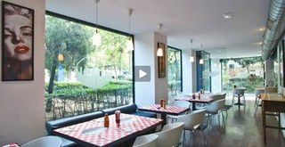

Sat, 11 Feb 2012 03:23:13 PST
Caña mas Tapa en Madrid
Caña mas Tapa en Madrid
Ya teníamos ganas de retomar uno de los temas más recurrentes de nuestro blog. Los bares de tapas en Madrid donde te ofrecen una tapa con cada caña. En esta ocasión os recomendamos 2 bares, que tienen que recomendártelos primero para entrar, porque lo último que te llamará la atención es su imagen. Bares de tapas con solera donde el boca a boca hace de publicidad y una rica y abundante tapa con cada bebida fideliza al cliente.El primero es el Restaurante Muñoz (Calle de Salamanca 28; tfno: 915 70 31 52; calidad/precio: 8/10). Situado en el barrio de Tetuan y bastante escondido, de decoración digamos austera y no muy espacioso. Todo estas "ventajas" se te olvidarán cuando empiecen a ponerte alguna de sus contundentes tapas. Especial mención a su riquísima tapa de "tortilla de patatas", pero también pueden caer pinchos de jamón, chorizo, salchichón, pimiento rellenos. Además si te quedas con hambre dejan en la barra una bandeja con algunos canapes, patatas y cortezas. También super recomendable si quieres ir a comer su "chuletón de Ávila" de 500gr, acompañada por una pulga de jamón y otra de queso, que quita el hipo...y el hambre también...El segundo es es Restaurante Mareas Vivas (Calle de Veneras 3; tfno:915 48 40 35; Calidad/Precio: 7/10) La localización de bar es mucho más céntrica (entre la plaza de Callao y Santo Domingo) Es uno de esos bares de tapas que el boca a boca lo hacen llenar cada fin de semana. El sitio es relativamente amplio con barra y mesas, por lo que si consigues un buen sitio disfrutarás más del tapeo. Entre las tapas que suelen sacar hay platos de paella, canapés de queso Philadelphia, salchichas, pimientos de piquillo con patatas y hasta garbanzos con carne. La caña a 1,50€ y de la marca Mahou. También recomendable para comer, y como buen gallego ofrecen buen marisco y un arroz con bogabante como plato estrella.Disfrutar de un buen tapeo. Saludos.Feed de Tapapedia
Ya teníamos ganas de retomar uno de los temas más recurrentes de nuestro blog. Los bares de tapas en Madrid donde te ofrecen una tapa con cada caña. En esta ocasión os recomendamos 2 bares, que tienen que recomendártelos primero para entrar, porque lo último que te llamará la atención es su imagen. Bares de tapas con solera donde el boca a boca hace de publicidad y una rica y abundante tapa con cada bebida fideliza al cliente.

El primero es el Restaurante Muñoz (Calle de Salamanca 28; tfno: 915 70 31 52; calidad/precio: 8/10). Situado en el barrio de Tetuan y bastante escondido, de decoración digamos austera y no muy espacioso. Todo estas "ventajas" se te olvidarán cuando empiecen a ponerte alguna de sus contundentes tapas. Especial mención a su riquísima tapa de "tortilla de patatas", pero también pueden caer pinchos de jamón, chorizo, salchichón, pimiento rellenos. Además si te quedas con hambre dejan en la barra una bandeja con algunos canapes, patatas y cortezas. También super recomendable si quieres ir a comer su "chuletón de Ávila" de 500gr, acompañada por una pulga de jamón y otra de queso, que quita el hipo...y el hambre también...
El segundo es es Restaurante Mareas Vivas (Calle de Veneras 3; tfno:915 48 40 35; Calidad/Precio: 7/10) La localización de bar es mucho más céntrica (entre la plaza de Callao y Santo Domingo) Es uno de esos bares de tapas que el boca a boca lo hacen llenar cada fin de semana. El sitio es relativamente amplio con barra y mesas, por lo que si consigues un buen sitio disfrutarás más del tapeo. Entre las tapas que suelen sacar hay platos de paella, canapés de queso Philadelphia, salchichas, pimientos de piquillo con patatas y hasta garbanzos con carne. La caña a 1,50€ y de la marca Mahou. También recomendable para comer, y como buen gallego ofrecen buen marisco y un arroz con bogabante como plato estrella.
Disfrutar de un buen tapeo. Saludos.
Mon, 16 Jan 2012 04:00:44 PST
Chocolate con churros en Madrid
Chocolate con churros en Madrid
Cuando llega el invierno y el frío, pocas cosas pueden apetecer más que disfrutar, en buena compañía, de una rica taza de chocolate caliente y más si en ella podemos mojar un crujientes y sabrosos churros. Aunque son todo un clásico me gustaría presentaros los que para nosotros son las mejores chocolaterías con churros de Madrid.
La primera es la Chocolatería San Miguel (Plazuela del Conde de Miranda, 4; calidad/precio 8,5/10) Ubicada cerca de la Plaza Mayor en una de las zonas con más encanto de Madrid, resulta muy agradable perderse por sus calles y acabar en esta chocolatería que destaca por su mágico ambiente de bar como de otra época. El servicio es siempre muy atento, y permitirá disfrutar muy a gusto de la que para muchos es la mejor chocolatería con churros de Madrid.
La siguiente es la Chocolatería Valor (Calle Postigo de San Martín, 7; calidad/precio 8/10) La compañía Valor dispone de varios establecimientos por varias ciudades de España y en Madrid, pero por su ambiente, decoración y tradición, desde 1881, la chocolatería ubicada junto a la plaza de Callao es sin duda la mejor opción para disfrutar de un buen chocolate. Suele tener una gran afluencia de clientes, sobre todo en la época navideña por lo que si quieres ir en este periodo te recomendamos que lo hagas mejor por las mañanas.
Por último la Chocolatería San Gines (Pasadizo San Ginés, 5; calidad/precio 8,5/10) Es quizás la de mayor fama y posiblemente la más demandada por los turistas (hasta han abierto una sucursal en Tokyo). Desde 1884 sirven posiblemente el mejor chocolate con churros de Madrid. Dispone de una planta a pie de calle donde está la barra, una planta baja más tranquila pero donde están los baños y también de una terraza, con calefactores en invierno, en la Calle San Gines, una de las zonas con más encanto de todo Madrid.
A disfrutar chocolateros!PD: hasta el día 16 de febrero en las Cafeterías Nebraska regalan una ración de churros: http://on.fb.me/pkBX1R
Feed de Tapapedia
 Cuando llega el invierno y el frío, pocas cosas pueden apetecer más que disfrutar, en buena compañía, de una rica taza de chocolate caliente y más si en ella podemos mojar un crujientes y sabrosos churros. Aunque son todo un clásico me gustaría presentaros los que para nosotros son las mejores chocolaterías con churros de Madrid.
Cuando llega el invierno y el frío, pocas cosas pueden apetecer más que disfrutar, en buena compañía, de una rica taza de chocolate caliente y más si en ella podemos mojar un crujientes y sabrosos churros. Aunque son todo un clásico me gustaría presentaros los que para nosotros son las mejores chocolaterías con churros de Madrid.
La primera es la Chocolatería San Miguel (Plazuela del Conde de Miranda, 4; calidad/precio 8,5/10) Ubicada cerca de la Plaza Mayor en una de las zonas con más encanto de Madrid, resulta muy agradable perderse por sus calles y acabar en esta chocolatería que destaca por su mágico ambiente de bar como de otra época. El servicio es siempre muy atento, y permitirá disfrutar muy a gusto de la que para muchos es la mejor chocolatería con churros de Madrid.
La siguiente es la Chocolatería Valor (Calle Postigo de San Martín, 7; calidad/precio 8/10) La compañía Valor dispone de varios establecimientos por varias ciudades de España y en Madrid, pero por su ambiente, decoración y tradición, desde 1881, la chocolatería ubicada junto a la plaza de Callao es sin duda la mejor opción para disfrutar de un buen chocolate. Suele tener una gran afluencia de clientes, sobre todo en la época navideña por lo que si quieres ir en este periodo te recomendamos que lo hagas mejor por las mañanas.
Por último la Chocolatería San Gines (Pasadizo San Ginés, 5; calidad/precio 8,5/10) Es quizás la de mayor fama y posiblemente la más demandada por los turistas (hasta han abierto una sucursal en Tokyo). Desde 1884 sirven posiblemente el mejor chocolate con churros de Madrid. Dispone de una planta a pie de calle donde está la barra, una planta baja más tranquila pero donde están los baños y también de una terraza, con calefactores en invierno, en la Calle San Gines, una de las zonas con más encanto de todo Madrid.
A disfrutar chocolateros!
PD: hasta el día 16 de febrero en las Cafeterías Nebraska regalan una ración de churros: http://on.fb.me/pkBX1R
Sat, 29 Oct 2011 11:31:18 PDT
Buffets libres vegetarianos en Madrid
Buffets libres vegetarianos en Madrid
Hace algún tiempo ya hablamos de algunos de los mejores buffets libres de Madrid. En esta ocasión nos gustaría proponeos algunos buffets libres vegetarianos de Madrid.El primero de ellos es el restaurante Shi Shang (Calle de Concepción Arenal 3; Tlfno: 915 23 12 20; Calidad/Precio:7). Situado en las proximidades de la plaza de Callao este amplio restaurante de comida china, con más de 10 años de antigüedad, permite comer una buena comida vegetariana, ya sea en modalidad de buffet libre (8,95€) o tipo menú (desde 4.50€ bebida y postre incluido). Entre todos los platos que nos ofrecen, de lo mejor son los platos de carne que no son realmente carne (son preparados de tofu o seitán) como el "pollo al limón" o la "ternera con bambu y setas", simplemente por lo sorprendente que resulta el sabor de estos platos merece la pena conocer el restaurante, también son muy ricas sus "empanadillas al vapor" y los "rollitos de primavera". El restaurante también cuenta con sevicio de take-away.El segundo es el restaurante Viva la Vida (Costanilla de San Andrés 16; Tlfno: 913 66 33 49 y Calle de las Huertas 57; Tlfno: 913 69 72 54; Calidad/Precio: 7,5/10). La originalidad de este restaurante de buffet libre es que no pagas un precio fijo, si no por el peso que cojas (100 gr = 2,10€) El local de huertas es pequeñito y está pensado principalmente para llevarte la comida a casa (sólo tienen una pequeña barra dentro del local y es mitad restaurante mitad supermercado orgánico), en cambio el local La Latina es más grande y destaca tanto su agradable terraza (cuando acompaña el tiempo) como la planta baja del local con una decoración original, alegre y colorista. La comida es muy rica y variada con platos como: el "cous-cous", "quiches" varios tipos de "croquetas", "ensaladas", piezas de "sushi", "rollitos vietnamitas" y postres tan apetecibles como la "tarta de zanahorias" o la "tarta de chocolate y nueces".Espero que os gusten nuestras propuestas y esperamos vuestros comentarios.Feed de Tapapedia

Hace algún tiempo ya hablamos de algunos de los mejores buffets libres de Madrid
. En esta ocasión nos gustaría proponeos algunos buffets libres vegetarianos de Madrid.

El primero de ellos es el
restaurante Shi Shang (Calle de Concepción Arenal 3; Tlfno: 915 23 12 20;
Calidad/Precio:7). Situado en las proximidades de la plaza de Callao este amplio
restaurante de comida china, con más de 10 años de antigüedad, permite comer una buena comida vegetariana, ya sea en modalidad de
buffet libre (8,95€) o tipo menú (desde 4.50€ bebida y postre incluido). Entre todos los platos que nos ofrecen, de lo mejor son los platos de carne que no son realmente carne (son preparados de tofu o seitán) como el "
pollo al limón" o la "
ternera con bambu y setas", simplemente por lo sorprendente que resulta el sabor de estos platos merece la pena conocer el
restaurante, también son muy ricas sus "
empanadillas al vapor" y los "
rollitos de primavera". El
restaurante también cuenta con sevicio de take-away.

El segundo es el
restaurante Viva la Vida (Costanilla de San Andrés 16; Tlfno: 913 66 33 49 y Calle de las Huertas 57; Tlfno: 913 69 72 54;
Calidad/Precio: 7,5/10). La originalidad de este
restaurante de
buffet libre es que no pagas un precio fijo, si no por el peso que cojas (100 gr = 2,10€) El local de huertas es pequeñito y está pensado principalmente para llevarte la comida a casa (sólo tienen una pequeña barra dentro del local y es mitad restaurante mitad supermercado orgánico), en cambio el local La Latina es más grande y destaca tanto su agradable terraza (cuando acompaña el tiempo) como la planta baja del local con una decoración original, alegre y colorista. La comida es muy rica y variada con platos como: el
"cous-cous",
"quiches" varios tipos de
"croquetas",
"ensaladas", piezas de
"sushi",
"rollitos vietnamitas" y postres tan apetecibles como la
"tarta de zanahorias" o la
"tarta de chocolate y nueces".
Espero que os gusten nuestras propuestas y esperamos vuestros comentarios.
Sat, 01 Oct 2011 10:48:24 PDT
Los mejores restaurantes en Arganzuela
Los mejores restaurantes en Arganzuela
Últimamente el castizo barrio de Arganzuela se ha puesto de moda, gracias a la revitalización que ha supuesto para la zona, proyectos como Madrid-Río y el centro cultural Matadero. Para toda la gente que quiera hacer una visita a este barrio le vamos a proponer algunos de los mejores restaurantes de Arganzuela para reponer fuerzas.
El primero es el restaurante ChessCafé. (Paseo de la Esperanza, 2; Tfno: 91 468 61 29; Calidad/Precio:6,75/10) La primera impresión que da el local (cercano a Madrid-Río) te deja un poco indiferente, con una decoración poco definida y con las mesas demasiado pegadas unas a otras, a pesar de ello sus grandes ventanales lo animan y hacen más agradable. Como suele ser habitual en nuestro blog, lo más interesante del local está en sus platos. La carta está basada en originales y sabrosas recetas de platos de comida rápida (sandwichs, pitas, hamburguesas, ensaladas, tostas) ninguno de sus platos destaca sobre los otros, si no que todos, tanto en sabor como en cantidad convencen. El precio de todos los platos suele rondar entre los 6€ y los 9€. Tampoco dejéis de probar sus gigantes y ricos batidos/zumos (el de naranja dicen que es el mejor de Madrid) y sus deliciosos y contundentes postres.
El segundo es el restaurante Buenas y Santas (Calle Bolivar 9; Tfno: 91 506 06 47; Calidad/Precio: 7,5/10). El restaurante prepara una comida casera y sin pretensiones con influencia de la cocina española y argentina. El local (cercano al Matadero) decorado acertadamente de forma sencilla y acogedora, se suele llenar, especialmente los fines de semana. De primeros son muy ricas sus empanadillas argentinas y sus quiches. De segundo destaca su sandwich de la Pampa, hecho con riquísima carne de vaca argentina, cebolla confitada, aguacate y hojas verdes. De beber os recomiendo sus original limonada (hecha con limón, hierbabuena y sirope de azúcar moreno) y de postre su goloso panqueque con dulce de leche y caramelo. El precio de los platos suele estar en torno a 10€ por lo que, teniendo en cuenta la calidad de sus materias primas en bastante razonable.
Quedo a la espera de vuestros comentarios y sugerencias.Feed de Tapapedia

Últimamente el castizo barrio de Arganzuela se ha puesto de moda, gracias a la revitalización que ha supuesto para la zona, proyectos como Madrid-Río y el centro cultural Matadero. Para toda la gente que quiera hacer una visita a este barrio le vamos a proponer algunos de los mejores restaurantes de Arganzuela para reponer fuerzas.

El primero es el restaurante ChessCafé. (Paseo de la Esperanza, 2; Tfno: 91 468 61 29; Calidad/Precio:6,75/10) La primera impresión que da el local (cercano a Madrid-Río) te deja un poco indiferente, con una decoración poco definida y con las mesas demasiado pegadas unas a otras, a pesar de ello sus grandes ventanales lo animan y hacen más agradable. Como suele ser habitual en nuestro blog, lo más interesante del local está en sus platos. La carta está basada en originales y sabrosas recetas de platos de comida rápida (sandwichs, pitas, hamburguesas, ensaladas, tostas) ninguno de sus platos destaca sobre los otros, si no que todos, tanto en sabor como en cantidad convencen. El precio de todos los platos suele rondar entre los 6€ y los 9€. Tampoco dejéis de probar sus gigantes y ricos batidos/zumos (el de naranja dicen que es el mejor de Madrid) y sus deliciosos y contundentes postres.
El segundo es el restaurante Buenas y Santas (Calle Bolivar 9; Tfno: 91 506 06 47; Calidad/Precio: 7,5/10). El restaurante prepara una comida casera y sin pretensiones con influencia de la cocina española y argentina. El local (cercano al Matadero) decorado acertadamente de forma sencilla y acogedora, se suele llenar, especialmente los fines de semana. De primeros son muy ricas sus empanadillas argentinas y sus quiches. De segundo destaca su sandwich de la Pampa, hecho con riquísima carne de vaca argentina, cebolla confitada, aguacate y hojas verdes. De beber os recomiendo sus original limonada (hecha con limón, hierbabuena y sirope de azúcar moreno) y de postre su goloso panqueque con dulce de leche y caramelo. El precio de los platos suele estar en torno a 10€ por lo que, teniendo en cuenta la calidad de sus materias primas en bastante razonable.
Quedo a la espera de vuestros comentarios y sugerencias.
Wed, 01 Jun 2011 08:43:19 PDT
Bares de Tapas en Malasaña
Bares de Tapas en Malasaña
El barrio de Malasaña, en el centro de Madrid, destaca por su gran cantidad de oferta de ocio; teatros, pubs de música, tiendas de moda y centros culturales hacen de Malasaña un lugar imprescindible para disfrutar de Madrid. Como no podía ser de otra forma, la gastronómica es otro de sus grandes reclamos y dentro de está oferta queremos destacar los ricos y baratos bares de tapas que hay en Malasaña.El primero es un clásico y ya casi veterano. La Musa (C/ Manuela Malasaña, 18; Tfno:91 448 75 58; Calidad/Precio:7,5). Se trata de un local cálido y con encanto, para ir mejor entre semana o a primera hora, por que los fines de semana se vuelve demasiado ruidoso y un poco caótico (no admiten reservas). Destacan sus tapas originales y de precio razonable como la bomba (patata rellena de carne con 3 salsas, 5€), el jabalí con ali-oli de miel y sobrasada (6,75€) o los tomates verdes fritos (tomates rebozados, con queso de cabra y mermelada de tomate, 6€). De postre no os perdáis el chocolatísimo (con chocolate blanco y negro).El siguiente en un primerizo, La blanca paloma (C/ Espíritu Santo 21; Tfno: 91 522 00 96; Calidad/Precio: 8,25/10). El local se a apuntado a la formula de la Cocacola que más bares deberían seguir: por cada bebida que pidamos, unas ricas y generosas tapas a un precio razonable (en este caso 2,5€). En este caso en la primera ronda, con cada bebida toca un huevo frito acompañado ni más ni menos que por 3 tapas variadas. Por cada nueva ronda otras 3 nuevas tapas (jamón, tortilla, ensaladilla rusa, salchicha, mini-hamburguesa, paella, morcilla,..) La única pega, como no podía ser de otra forma, los fines de semana no cabe ni un alfiler.
Con panorama, se nos acaban las excusas para no ir a Malasaña, jeje.
Feed de Tapapedia

El barrio de Malasaña, en el centro de Madrid, destaca por su gran cantidad de oferta de ocio; teatros, pubs de música, tiendas de moda y centros culturales hacen de Malasaña un lugar imprescindible para disfrutar de Madrid. Como no podía ser de otra forma, la gastronómica es otro de sus grandes reclamos y dentro de está oferta queremos destacar los ricos y baratos bares de tapas que hay en Malasaña.
El primero es un clásico y ya casi veterano. La Musa (C/ Manuela Malasaña, 18; Tfno:91 448 75 58; Calidad/Precio:7,5). Se trata de un local cálido y con encanto, para ir mejor entre semana o a primera hora, por que los fines de semana se vuelve demasiado ruidoso y un poco caótico (no admiten reservas). Destacan sus tapas originales y de precio razonable como la bomba (patata rellena de carne con 3 salsas, 5€), el jabalí con ali-oli de miel y sobrasada (6,75€) o los tomates verdes fritos (tomates rebozados, con queso de cabra y mermelada de tomate, 6€). De postre no os perdáis el chocolatísimo (con chocolate blanco y negro).

El siguiente en un primerizo, La blanca paloma (C/ Espíritu Santo 21; Tfno: 91 522 00 96; Calidad/Precio: 8,25/10). El local se a apuntado a la formula de la Cocacola que más bares deberían seguir: por cada bebida que pidamos, unas ricas y generosas tapas a un precio razonable (en este caso 2,5€). En este caso en la primera ronda, con cada bebida toca un huevo frito acompañado ni más ni menos que por 3 tapas variadas. Por cada nueva ronda otras 3 nuevas tapas (jamón, tortilla, ensaladilla rusa, salchicha, mini-hamburguesa, paella, morcilla,..) La única pega, como no podía ser de otra forma, los fines de semana no cabe ni un alfiler.
Con panorama, se nos acaban las excusas para no ir a Malasaña, jeje.
Tue, 08 Mar 2011 04:02:42 PST
Restaurantes africanos en Madrid
Restaurantes africanos en Madrid
p.p1 {margin: 0.0px 0.0px 0.0px 0.0px; font: 12.0px Helvetica} p.p2 {margin: 0.0px 0.0px 0.0px 0.0px; font: 12.0px Helvetica; min-height: 14.0px} Unas de las principales ventajas de vivir en una ciudad multicultural como Madrid, es poder acercarse a nuevas culturas a través de la gastronomía. Una de ellas, quizás de las menos conocidas, es la africana. En Madrid tenemos la suerte de contar con varios restaurantes africanos para saciar nuestra curiosidad. El primero que os propongo es Baobab (C/ Cabesteros, 1; Calidad/Precio: 7,5) El restaurante situado en el barrio de Lavapies, es especialista en cocina senegalesa. el local es bastante sobrio en su decoración por lo que si el tiempo acompaña os aconsejo disfrutar de su agradable terraza. La carta está compuesta por platos únicos (bastante abundantes) de carne, pollo y pescado acompañados por arroz senegalés (un arroz de grano muy pequeño pero sabroso) arroz blanco o couscous. Os recomiendo el "Thiebou Dienne" (dorada servida sobre arroz senegalés y verduras) y el "Mafe" (arroz blanco con carne en salsa de cacahuete). Para beber os recomiendo que probéis o el "bisap" (infusión de flor de hibisco) o el "zumo de buey" (zumo del fruto del baobab). Los platos cuestan entre 7€ y 8€ por lo que podéis comer de esta forma tan original y rica por muy poco dinero. El segundo es el restaurante Kim Bum Bu (C/ Colmenares, 7; Tfno: 91 521 26 81; Calidad/Precio: 7) El local situado en el barrio de Chueca recoge varias cocinas del continente africano, y quizás sea menos auténtico que Baobab y más adaptado al paladar y gustos occidentales. La decoración del local, resulta muy cuidada y moderna. Tienen un número bastante amplio de entrantes y segundos pero os recomiendo de entrantes: "ensalada de papaya y espinacas con aguacate" y la "batwana de maíz con salsa de alcachofas", de segundo; "pollo con plátanos y yuca". El precio de cada plato está en algo menos de 10€ por lo tampo resulta caro comer en este restaurante africano. Espero que os gusten nuestras nuevas recomendaciones y esperamos vuestros comentarios.Feed de Tapapedia

Unas de las principales ventajas de vivir en una ciudad multicultural como Madrid, es poder acercarse a nuevas culturas a través de la gastronomía. Una de ellas, quizás de las menos conocidas, es la africana. En Madrid tenemos la suerte de contar con varios restaurantes africanos para saciar nuestra curiosidad.

El primero que os propongo es Baobab (C/ Cabesteros, 1; Calidad/Precio: 7,5) El restaurante situado en el barrio de Lavapies, es especialista en cocina senegalesa. el local es bastante sobrio en su decoración por lo que si el tiempo acompaña os aconsejo disfrutar de su agradable terraza. La carta está compuesta por plat
os únicos (bastante abundantes) de carne, pollo y pescado acompañados por arroz senegalés (un arroz de grano muy pequeño pero sabroso) arroz blanco o couscous. Os recomiendo el "Thiebou Dienne" (dorada servida sobre arroz senegalés y verduras) y el "Mafe" (arroz blanco con carne en salsa de cacahuete). Para beber os recomiendo que probéis o el "bisap" (infusión de flor de hibisco) o el "zumo de buey" (zumo del fruto del baobab). Los platos cuestan entre 7€ y 8€ por lo que podéis comer de esta forma tan original y rica por muy poco dinero.

El segundo es el restaurante Kim Bum Bu (C/ Colmenares, 7; Tfno: 91 521 26 81; Calidad/Precio: 7) El local situado en el barrio de Chueca recoge varias cocinas del continente africano, y quizás sea menos auténtico que Baobab y más adaptado al paladar y gustos occidentales. La decoración del local, resulta muy cuidada y moderna. Tienen un número bastante amplio de entrantes y segundos pero os recomiendo de entrantes: "ensalada de papaya y espinacas con aguacate" y la "batwana de maíz con salsa de alcachofas", de segundo; "pollo con plátanos y yuca". El precio de cada plato está en algo menos de 10€ por lo tampo resulta caro comer en este restaurante africano.
Espero que os gusten nuestras nuevas recomendaciones y esperamos vuestros comentarios.
Sat, 29 Jan 2011 09:30:36 PST
Mejores restaurantes coreanos en Madrid
Mejores restaurantes coreanos en Madrid
En este blog ya hemos hablado en anteriores ocasiones de restaurantes coreanos en Madrid, por citar algunos: el restaurante Shila (para mi gusto el mejor coreano de Madrid), Mashita y Hang Gang. Pero por suerte la nómina no se acaba aquí, es por ello que me gustaría recomendaros algún otro restaurante coreano, para seguir descubriendo esta gastronomía y así si os apetece algo de comida oriental, no repetir con los extendidos restaurantes chinos y japoneses.El primero es el restaurante Palillos del cardenal (C/ Cardenal Cisneros 49; Tlfno: 914 489 060; Calidad/Precio: 7) El restaurante es bastante amplio y no suele estar muy lleno, por lo que nos podemos darnos el lujo de ir un fin de semana sin reserva. Los jóvenes camareros de origen coreano nos ayudaran a la hora de elegir los diferentes platos coreanos de la carta, dentro de la cual también incluyen un pequeño apartado japonés para piezas de sushi. De primero es buena opción pedir sus ricas "Gyoza" (empanadillas a la plancha) y su picante "Kimchi" (ensalada de col con salsa de guindilla). Para continuar muy sabroso su "bibimbab· (arroz frito con verduras y huevo) y los "Chapche" (fideos de batata con verduras), para terminar imprescindible pedir el "bulgoqui·. Los postres no es su fuerte pero no está del todo mal. El precio suele rondar los 15€ por persona.Otro restaurante coreano recomendable es Dimibang. (C/ Rodriguez San Pedro 67; Tfno: 915 446 213; Calidad/Precio 6,5)El restaurante situado en el barrio de Argüelles, guarda ciertas similitudes con el anterior descrito. De la misma forma que el restaurante Palillos del cardenal, tienen tanto platos coreanos como japoneses. De primero me gustaría recomendar el "mandoo" (empanadilla coreana a la plancha de verdura y carne), también muy rico y nada grasiento (algo difícil de encontrar) su "tempura de verduras". De segundo me gustaría recomendar de nuevo el "Chapche" y si te lo puedes permitir (25€) el "atún yuk fe" (taco de atún rojo crudo con algas y láminas de pescado secas). De postre un rico descubrimiento el "Pat Bing" (judía roja dulce con frutas en almibar y escarchadas). El precio en esta caso se eleva hasta unos 25€ por persona. Espero que os animéis a probar la rica y desconocida cocina coreana. Feed de Tapapedia

En este blog ya hemos hablado en anteriores ocasiones de restaurantes coreanos en Madrid, por citar algunos: el restaurante Shila (para mi gusto el mejor coreano de Madrid), Mashita y Hang Gang. Pero por suerte la nómina no se acaba aquí, es por ello que me gustaría recomendaros algún otro restaurante coreano, para seguir descubriendo esta gastronomía y así si os apetece algo de comida oriental, no repetir con los extendidos restaurantes chinos y japoneses.

El primero es el restaurante Palillos del cardenal (C/ Cardenal Cisneros 49; Tlfno: 914 489 060; Calidad/Precio: 7) El restaurante es bastante amplio y no suele estar muy lleno, por lo que nos podemos darnos el lujo de ir un fin de semana sin reserva. Los jóvenes camareros de origen coreano nos ayudaran a la hora de elegir los diferentes platos coreanos de la carta, dentro de la cual también incluyen un pequeño apartado japonés para piezas de sushi. De primero es buena opción pedir sus ricas "Gyoza" (empanadillas a la plancha) y su picante "Kimchi" (ensalada de col con salsa de guindilla). Para continuar muy sabroso su "bibimbab· (arroz frito con verduras y huevo) y los "Chapche" (fideos de batata con verduras), para terminar imprescindible pedir el "bulgoqui·. Los postres no es su fuerte pero no está del todo mal. El precio suele rondar los 15€ por persona.

Otro restaurante coreano recomendable es Dimibang. (C/ Rodriguez San Pedro 67; Tfno: 915 446 213; Calidad/Precio 6,5)El restaurante situado en el barrio de Argüelles, guarda ciertas similitudes con el anterior descrito. De la misma forma que el restaurante Palillos del cardenal, tienen tanto platos coreanos como japoneses. De primero me gustaría recomendar el "mandoo" (empanadilla coreana a la plancha de verdura y carne), también muy rico y nada grasiento (algo difícil de encontrar) su "tempura de verduras". De segundo me gustaría recomendar de nuevo el "Chapche" y si te lo puedes permitir (25€) el "atún yuk fe" (taco de atún rojo crudo con algas y láminas de pescado secas). De postre un rico descubrimiento el "Pat Bing" (judía roja dulce con frutas en almibar y escarchadas). El precio en esta caso se eleva hasta unos 25€ por persona.
Espero que os animéis a probar la rica y desconocida cocina coreana.
Wed, 28 Dec 2011 02:45:34 PST
Diner´s Americanos en Madrid
Diner´s Americanos en Madrid
En estos últimos años la cultura gastronómica americana se ha hecho fuerte en Madrid. Uno de sus mayores exponentes son los diner´s, que no son otra cosa, que los típicos restaurantes americanos de comida rápida que hemos vistos tantas veces en las películas; con sus ventanas transparentes y sillones acolchados.Uno de estos diner´s es el Tommy Mel's (Calle de Pedro Teixeira 8; 914 178 744 y Calle Hortaleza 34; Tfno: 91 521 23 58 Calidad/Precio: 7,5/10). Posiblemente es el dinner donde más conseguido está el tema de la decoración. No hacen reservas por lo que tendrás que apuntarte en una lista, y si está todo ocupado y quieres, tomarte algo en su barra mientras esperas. Las hamburguesas están bastante buenas (aunque no llega al nivel de las del Alfredo´s y no llevan patatas de acompañamiento). Os recomiendo la “Tommy Mel´s” (salsa Mel’s, lechuga, tomate, cebolla roja, pepinillos, queso cheddar, beicon crujiente y cebolla caramelizada) Para beber os recomiendo los "batidos naturales" de chocolate como los pediría George McFly. De postre tanto el "Tommy Mel´s brownie Sundae" (Helado de Vainilla, brownie, chocolate fundido y nata) como la tarta "Big Cheesecake" están muy buenas.Otro diner es Peggy Sue´s (C/ de Amaniel, 20 | C/ Eguilaz, 1 | C/ Menorca, 19 | C/ Belén,5 | C/ General Castaños, 1 (Getafe); Calidad/Precio: 7/10) Dispone de varios restaurantes repartidos por Madrid. Con locales más pequeños que los de Tommy Mel´s, también destacan estos restaurantes americanos por su decoración y por estar siempre hasta arriba. Dentro de las hamburguesas os recomiendo la "Peggy Sue´s" (cebolla a la plancha, y relish) y la “Mary Low” (cebolla a la plancha, queso azul y bacon). Las "alitas de pollo con salsa de miel y mostaza" también están muy conseguidas. Para beber curiosa la "pink lemonade". De postre el omnipresente "brownie".Ahora sólo hace falta ponerse a dieta para hacer un hueco a esta sabrosa incursión americana.
Feed de Tapapedia

En estos últimos años la cultura gastronómica americana se ha hecho fuerte en
Madrid. Uno de sus mayores exponentes son los
diner´s, que no son otra cosa, que los típicos
restaurantes americanos de comida rápida que hemos vistos tantas veces en las películas; con sus ventanas transparentes y sillones acolchados.

Uno de estos
diner´s es el
Tommy Mel's (Calle de Pedro Teixeira 8; 914 178 744 y Calle Hortaleza 34; Tfno: 91 521 23 58
Calidad/Precio: 7,5/10). Posiblemente es el dinner donde más conseguido está el tema de la decoración. No hacen reservas por lo que tendrás que apuntarte en una lista, y si está todo ocupado y quieres, tomarte algo en su barra mientras esperas. Las hamburguesas están bastante buenas (aunque no llega al nivel de las del Alfredo´s y no llevan patatas de acompañamiento). Os recomiendo la
“Tommy Mel´s” (salsa Mel’s, lechuga, tomate, cebolla roja, pepinillos, queso cheddar, beicon crujiente y cebolla caramelizada) Para beber os recomiendo los
"batidos naturales" de chocolate como los pediría George McFly. De postre tanto el
"Tommy Mel´s brownie Sundae" (Helado de Vainilla, brownie, chocolate fundido y nata) como la tarta
"Big Cheesecake" están muy buenas.
Otro
diner es
Peggy Sue´s (C/ de Amaniel, 20 | C/ Eguilaz, 1 | C/ Menorca, 19 | C/ Belén,5 | C/ General Castaños, 1 (Getafe);
Calidad/Precio: 7/10) Dispone de varios
restaurantes repartidos por
Madrid. Con locales más pequeños que los de Tommy Mel´s, también destacan estos
restaurantes americanos por su decoración y por estar siempre hasta arriba. Dentro de las hamburguesas os recomiendo la
"Peggy Sue´s" (cebolla a la plancha, y relish) y la
“Mary Low” (cebolla a la plancha, queso azul y bacon). Las
"alitas de pollo con salsa de miel y mostaza" también están muy conseguidas. Para beber curiosa la
"pink lemonade". De postre el omnipresente
"brownie".
Ahora sólo hace falta ponerse a dieta para hacer un hueco a esta sabrosa incursión americana.
Wed, 23 Nov 2011 07:32:52 PST
Restaurantes Chinos en Madrid
Restaurantes Chinos en Madrid
Los restaurantes chinos en Madrid, siempre han sido uno de los pilares de este blog y por ello, uno de nuestros compromisos es ir añadiendo poco a poco, los mejores restaurantes chinos que vayamos conociendo o vayan apareciendo.El restaurante Don Loy (Paseo de Extremadura 30; Tfno: 914 634 546; Calidad/Precio: 7,5/10) es uno de esos chinos de chinos que no pueden clasificarse dentro de los 2 más típicos ejemplos de restaurantes chinos que hay en Madrid (los chinos cutres de los 90 y los fashions de este principio de siglo) si no como restaurante chinos de chinos. En este caso este restaurante chino está especializado en la comida cantonesa. El comedor, que ofrece una gran número de mesas, conserva en gran medida la decoración, que anteriormente ocupaba en este espacio un típico mesón de barrio. Dentro de lo más destacable de su cocina, son sus variedades de dim sum servidos en cestas de bambú; los "shao-mai"(pastel de cerdo y gambas) el "xia-jiao" (empanadilla de arroz y gambas al vapor) y los "cha-sao-shang" (canelones rellenos de carne asada al vapor). Muy ricos también sus "tallarines frescos con carne, verduras y setas", exquisita aunque menos económica la "langosta con puerro, jengibre y salsa de soja". El restaurante no es ni barato ni caro (unos 20€ por pax), no dejan pedir jarras de agua, pero merece la pena probarlo y descubrir los que dicen que son, los mejores dim sum de Madrid.El siguiente es el restaurante Fundue Si Chuang (C/ Divino Vallés 31; Tfno: 914 737 129; Calidad/Precio 8/10). La estrella aquí es el Hot Pot o founde china. Se trata de un olla con caldo, que se mantiene caliente a través de un pequeño fogón, y al que se le van añadiendo un gran número de ingredientes. El caldo se puede elegir picante (realmente picante), normal, o de los 2 tipos (la olla viene con un separador para no mezclar los caldos). Para comer, se piden diferentes acompañamientos crudos. Los hay de todo tipo: carnes, pescados, verduras, pastas... Los ingredientes se van añadiendo mezclados por tandas. Una vez cocidos se van sacando según el gusto de cada uno. De los que probé me gustaron muchos los "raviolis de huevo rellenos de carne", los "fideos chinos" las "setas shitake" y la "carne de ternera" (te la sirven congelada y cortada en finas lonchas). Como acompañamiento te ponen un cuenco con salsa especial de cacahuetes. El precio está genial (unos 15€ por pax) y me parece una opción rica y divertida de descubrir otro gran parte de la gastronomía china.
Esperamos vuestros comentarios!Feed de Tapapedia
Los
restaurantes chinos en Madrid, siempre han sido uno de los pilares de este
blog y por ello, uno de nuestros compromisos es ir añadiendo poco a poco, los mejores
restaurantes chinos que vayamos conociendo o vayan apareciendo.

El
restaurante Don Loy (Paseo de Extremadura 30; Tfno: 914 634 546;
Calidad/Precio: 7,5/10) es uno de esos
chinos de chinos que no pueden clasificarse dentro de los 2 más típicos ejemplos de
restaurantes chinos que hay en
Madrid (los
chinos cutres de los 90 y los fashions de este principio de siglo) si no como
restaurante chinos de chinos. En este caso este
restaurante chino está especializado en la comida cantonesa. El comedor, que ofrece una gran número de mesas, conserva en gran medida la decoración, que anteriormente ocupaba en este espacio un típico mesón de barrio. Dentro de lo más destacable de su cocina, son sus variedades de dim sum servidos en cestas de bambú; los "
shao-mai"(pastel de cerdo y gambas) el "
xia-jiao" (empanadilla de arroz y gambas al vapor) y los "
cha-sao-shang" (canelones rellenos de carne asada al vapor). Muy ricos también sus "
tallarines frescos con carne, verduras y setas", exquisita aunque menos económica la "
langosta con puerro, jengibre y salsa de soja". El
restaurante no es ni barato ni caro (unos 20€ por pax), no dejan pedir jarras de agua, pero merece la pena probarlo y descubrir los que dicen que son, los mejores dim sum de
Madrid.

El siguiente es el
restaurante Fundue Si Chuang (C/ Divino Vallés 31; Tfno: 914 737 129;
Calidad/Precio 8/10). La estrella aquí es el Hot Pot o founde china. Se trata de un olla con caldo, que se mantiene caliente a través de un pequeño fogón, y al que se le van añadiendo un gran número de ingredientes. El caldo se puede elegir picante (realmente picante), normal, o de los 2 tipos (la olla viene con un separador para no mezclar los caldos). Para comer, se piden diferentes acompañamientos crudos. Los hay de todo tipo: carnes, pescados, verduras, pastas... Los ingredientes se van añadiendo mezclados por tandas. Una vez cocidos se van sacando según el gusto de cada uno. De los que probé me gustaron muchos los "
raviolis de huevo rellenos de carne", los "
fideos chinos" las "
setas shitake" y la "
carne de ternera" (te la sirven congelada y cortada en finas lonchas). Como acompañamiento te ponen un cuenco con salsa especial de cacahuetes. El precio está genial (unos 15€ por pax) y me parece una opción rica y divertida de descubrir otro gran parte de la gastronomía china.
Esperamos vuestros comentarios!
Tue, 23 Feb 2010 00:27:53 PST
Los Mejores Restaurantes Asiaticos de Madrid
Los Mejores Restaurantes Asiaticos de Madrid
Tapapedia cumple 2 añitos y no he encontrado mejor regalo, que dedicar este post a los mejores restaurantes asiáticos de Madrid. En los últimos años, al compás de la moda, han aparecido una gran cantidad de restaurantes asiáticos (englobo aquí a culturas gastronómicas, a veces tan diferentes como la tailandesa, la coreana, la japonesa...), pero pocos son los que llegan a un nivel de sobresaliente. Por eso en esta ocasión tan especial, me gustaría mostraros cuales, en mi opinión, son los mejores restaurantes asiáticos de Madrid, aunque en esta ocasión habrá que rascarse un poco más el bolsillo.El primero es el veterano restaurante coreano Shila (C/ Panamá, 4; Tlfn: 91 457 88 33; Calidad/Precio: 9,5/10). El restaurante es bastante amplio y dispone de algunas salas separadas del comedor principal, que pueden venir muy bien para realizar celebraciones. El restaurante debería cuidar algo más algunos detalles (flores de plástico, palillos de madera en vez de los de metal coreanos), sin embargo otros son más agradables (murales tradicionales coreanos o el ventanal desde el cual se puede ver cocinar al chef en la parrilla). A mi parecer el restaurante se ha dejado seducir, por el habitual desconocimiento de la cultura gastronómica coreana, y ha incluido algunos platos "comerciales" que ni por autenticidad ni por calidad deberían estar en su carta (rollos de primavera). Este tipo de cosas pueden provocar, que si no se conoce bien su cocina, en más de una ocasión deje una impresión de cocina de menor calidad de la que realmente tiene. Es por eso que viene muy bien conocer de antemano algunos deliciosos platos que esconde su carta. Para comenzar os aconsejo dos platos "Yang Chang Pi" una ensalada con medusa (muy similar al calamar) con salsa de mostaza y "Wang Seu Tuiguim" que son langostinos rebozados al estilo coreano. Después, aunque no al alcance de todos los bolsillos "langosta Shila" acompañada de verduras y una rica salsa tipo agridulce, y la "lubina con verduras". Para terminar dos platos que combinados son de lo mejor que he comido el "Dak Dari Gu-i" muslos de pollo cocinados al carbón con una salsa simplemente deliciosa y el "Arroz Shila". Los postres son lo más flojo, deberían contar con algún plato típico de Corea. Lo dicho, una comida simplemente espectacular a buen precio.El segundo es un relativo novel, Susdestada (C/ Ponzano 85; Tlfn: 91 533 41 54; Calidad Precio:9/10). Recién mudado a un nuevo local más amplio y menos ruidoso que el anterior, el restaurante ofrece una cocina podríamos decir "asiática" con algún toque "porteño". Lo mejor para conocer su exuberante y fresca cocina es decantarse por su menú degustación (38€).Empezamos por tres entrantes: "Nem Cua" rollos de cerdo y cangrejo que se comen envueltos en una hoja de lechuga con cilantro y menta, "Dumpling al estilo de Singapur" unas ricas empanadillas de cerdo y verduras, y "Samosas Indias de curry rojo" impactante el fresco sabor de su salsa de tamarindo, comino, cilantro y hierbabuena. Como platos principales: "Bun Cha" brochetas de cerdo acompañado de fideos de arroz y varias hiervas aromáticas, "Com Rang" un arroz frito al estilo Vietnamita y para acabar "curry rojo de carrillada de vaca" un plato bastante picante y con una calidad en la materia prima excelente. Para terminar os aconsejo que probéis sus ricas caipirinhas. En definitiva una comida llena de matices donde el gusto por los aromas y la calidad de sus productos lo alzan a lo mejor de la cocina de esta ciudad.Un saludo y que cumpla el blog muchos años más.
Feed de Tapapedia

Tapapedia cumple 2 añitos y no he encontrado mejor regalo, que dedicar este post a los
mejores restaurantes asiáticos de Madrid. En los últimos años, al compás de la moda, han aparecido una gran cantidad de
restaurantes asiáticos (englobo aquí a culturas gastronómicas, a veces tan diferentes como la tailandesa, la coreana, la japonesa...), pero pocos son los que llegan a un nivel de sobresaliente. Por eso en esta ocasión tan especial, me gustaría mostraros cuales, en mi opinión, son los
mejores restaurantes asiáticos de Madrid, aunque en esta ocasión habrá que rascarse un poco más el bolsillo.

El primero es el veterano
restaurante coreano
Shila (C/ Panamá, 4; Tlfn: 91 457 88 33;
Calidad/Precio: 9,5/10). El
restaurante es bastante amplio y dispone de algunas salas separadas del comedor principal, que pueden venir muy bien para realizar celebraciones. El
restaurante debería cuidar algo más algunos detalles (flores de plástico, palillos de madera en vez de los de metal coreanos), sin embargo otros son más agradables (murales tradicionales coreanos o el ventanal desde el cual se puede ver cocinar al chef en la parrilla). A mi parecer el
restaurante se ha dejado seducir, por el habitual desconocimiento de la cultura gastronómica coreana, y ha incluido algunos platos "comerciales" que ni por autenticidad ni por calidad deberían estar en su carta (rollos de primavera). Este tipo de cosas pueden provocar, que si no se conoce bien su cocina, en más de una ocasión deje una impresión de cocina de menor calidad de la que realmente tiene. Es por eso que viene muy bien conocer de antemano algunos deliciosos platos que esconde su carta. Para comenzar os aconsejo dos platos
"Yang Chang Pi" una ensalada con medusa (muy similar al calamar) con salsa de mostaza y
"Wang Seu Tuiguim" que son langostinos rebozados al estilo coreano. Después, aunque no al alcance de todos los bolsillos
"langosta Shila" acompañada de verduras y una rica salsa tipo agridulce, y la
"lubina con verduras". Para terminar dos platos que combinados son de lo mejor que he comido el
"Dak Dari Gu-i" muslos de pollo cocinados al carbón con una salsa simplemente deliciosa y el
"Arroz Shila". Los postres son lo más flojo, deberían contar con algún plato típico de Corea. Lo dicho, una comida simplemente espectacular a buen precio.

El segundo es un relativo novel,
Susdestada (C/ Ponzano 85; Tlfn: 91 533 41 54;
Calidad Precio:9/10). Recién mudado a un nuevo local más amplio y menos ruidoso que el anterior, el
restaurante ofrece una cocina podríamos decir "
asiática" con algún toque "porteño". Lo mejor para conocer su exuberante y fresca cocina es decantarse por su menú degustación (38€).
Empezamos por tres entrantes:
"Nem Cua" rollos de cerdo y cangrejo que se comen envueltos en una hoja de lechuga con cilantro y menta,
"Dumpling al estilo de Singapur" unas ricas empanadillas de cerdo y verduras, y
"Samosas Indias de curry rojo" impactante el fresco sabor de su salsa de tamarindo, comino, cilantro y hierbabuena. Como platos principales: "
Bun Cha" brochetas de cerdo acompañado de fideos de arroz y varias hiervas aromáticas, "
Com Rang" un arroz frito al estilo Vietnamita y para acabar "
curry rojo de carrillada de vaca" un plato bastante picante y con una calidad en la materia prima excelente. Para terminar os aconsejo que probéis sus ricas caipirinhas. En definitiva una comida llena de matices donde el gusto por los aromas y la calidad de sus productos lo alzan a lo mejor de la cocina de esta ciudad.
Un saludo y que cumpla el blog muchos años más.
Sun, 28 Feb 2010 09:06:11 PST
Los Mejores Pintxos de Madrid
Los Mejores Pintxos de Madrid
Esta vez me gustaría hablar sobre los parientes pijos de las tapas, los pintxos. Su origen está en el País Vasco, donde son los auténticos reyes del tapeo y si habéis estado allí habréis podido comprobar que por variedad y sabor son una auténtica maravilla. Aquí en Madrid es difícil encontrar pintxos al mismo nivel, y generalmente suelen ser copias menos sabrosas y los pocos sitios que alcanzan el nivel se pasan de precio. Por eso me gustaría recomendaros los sitios donde para mi tienen los mejores pintxos de Madrid, manteniendo un precio asumible claro.
El primero es el restaurante Sagaretxe (Calle de Eloy Gonzalo 26; Tfno: 914 462 588; Calidad/Precio 7,5/10). El nombre se este restaurante significa en castellano casa de la manzana y no por casualidad ya que se comporta perfectamente como sidrería (tiene una barra libre de sidra a 6,80 € por persona). El restaurante tiene una primera zona con una gran barra repleta de pintxos y otra zona que funciona como comedor (magnífico por cierto), pero es en la primera parte en la que nos vamos a centrar. A lo largo del día elaboran más de 80 pintxos de todo tipo, fríos y calientes. Entre los que he catado y más me han gustado están el de "Queso Idiazábal y cebolla caramelizada" y el de "Morcilla con piñones y ahumados". La unidad cuesta 2,40€ pero tienes la posibilidad de pedir 8 pintxos por 14€ (1,75€ ud.) o 12 pintxos 20 Euros (1,65€ ud.). En definitiva un agradable lugar para comer buenos pintxos regados con sidra. El segundo es Txirimiri (Calle del General Díaz Porlier 91 y Calle del Humilladero 6; Calidad/Precio 7,5/10). Se trata de una pequeña taberna (en realidad son 2; la 1º en el barrio de Salamanca y la 2º en La Latina) donde sirven pintxos de alta cocina y también ricas raciones. El que está situado en la zona de la Latina es algo más grande, pero ninguno de los dos es muy amplio y suelen llenarse los fines de semana. Todos sus platos destacan por su gran calidad pero sobresalen su "pintxo de tortilla de patata con cebolla caramelizada", y su "pintxo de hamburguesa Unai" (viene dos unidades aunque es un poco caro 7,80€). En definitiva otro lugar para pedir unos pintxos, algo más caro, pero igual de delicioso.Espero que os gusten y os animéis a comentar.
Feed de Tapapedia

Esta vez me gustaría hablar sobre los parientes pijos de las
tapas, los
pintxos. Su origen está en el País Vasco, donde son los auténticos reyes del tapeo y si habéis estado allí habréis podido comprobar que por variedad y sabor son una auténtica maravilla. Aquí en
Madrid es difícil encontrar
pintxos al mismo nivel, y generalmente suelen ser copias menos sabrosas y los pocos sitios que alcanzan el nivel se pasan de precio. Por eso me gustaría recomendaros los sitios donde para mi tienen
los mejores pintxos de Madrid, manteniendo un precio asumible claro.

El primero es el
restaurante Sagaretxe (Calle de Eloy Gonzalo 26; Tfno: 914 462 588;
Calidad/Precio 7,5/10). El nombre se este
restaurante significa en castellano casa de la manzana y no por casualidad ya que se comporta perfectamente como sidrería (tiene una barra libre de sidra a 6,80 € por persona). El
restaurante tiene una primera zona con una gran barra repleta de
pintxos y otra zona que funciona como comedor (magnífico por cierto), pero es en la primera parte en la que nos vamos a centrar. A lo largo del día elaboran más de 80
pintxos de todo tipo, fríos y calientes. Entre los que he catado y más me han gustado están el de "
Queso Idiazábal y cebolla caramelizada" y el de "
Morcilla con piñones y ahumados". La unidad cuesta 2,40€ pero tienes la posibilidad de pedir 8
pintxos por 14€ (1,75€ ud.) o 12
pintxos 20 Euros (1,65€ ud.). En definitiva un agradable lugar para comer buenos
pintxos regados con sidra.

El segundo es
Txirimiri (Calle del General Díaz Porlier 91 y Calle del Humilladero 6;
Calidad/Precio 7,5/10). Se trata de una pequeña taberna (en realidad son 2; la 1º en el barrio de Salamanca y la 2º en La Latina) donde sirven
pintxos de alta cocina y también ricas raciones. El que está situado en la zona de la Latina es algo más grande, pero ninguno de los dos es muy amplio y suelen llenarse los fines de semana. Todos sus platos destacan por su gran calidad pero sobresalen su "
pintxo de tortilla de patata con cebolla caramelizada", y su "
pintxo de hamburguesa Unai" (viene dos unidades aunque es un poco caro 7,80€). En definitiva otro lugar para pedir unos
pintxos, algo más caro, pero igual de delicioso.
Espero que os gusten y os animéis a comentar.
Wed, 23 Nov 2011 07:36:14 PST
Restaurante Japones barato en Madrid
Restaurante Japones barato en Madrid
Después de haber hablado anteriormente, de los que para mi son los mejores restaurantes japoneses baratos de Madrid, me gustaría completar esta recomendación con otros 2 restaurantes japoneses, los cuales se caracterizan por su originalidad y su gusto por la pasta al estilo japones.El primero de ellos es el restaurante Oishii Sushi & Ramen (Calle de Miguel Moya 6; Calidad/Precio: 7,5/10). Situado en una boca calle de Gran Vía cerca de la Plaza de Callao. Este restaurante sorprende nada más entrar por su original decoración (del archiconocido García de Vinuesa) y por su espectacular barra giratoria (Kaiten Sushi). El restaurante es bastante amplio (con 2 plantas) especialmente recomendable la planta alta en la cual podrás comer junto a la barra giratoria mientras estás viendo trabajar en directo a sus sushiman. La oferta gastronómica es amplia; podrás elegir entre los "sushis" y "sashimis" de su barra giratoria (además de una deliciosa "ensalada de algas con sésamo"), los precios de estos dependerán del color del plato que tengan (desde 2,5€ hasta 5€) o entre los platos que ofrecen en la carta. Aquí destaca su especialidad el “ramen”, que no es otra cosa que una sopa con tallarines sazonada con salsa de soja y acompañada de diferentes guarniciones (este plato es todo un fenómeno social en Japón). También muy ricas sus “empanadillas gyoza”, sus “brochetas de pollo yakitori" o sus “Yaki Udon/Soba” (pasta a la plancha). Lo dicho, un bonito sitio para disfrutar de la comida japonesa a un buen precio.El siguiente restaurante recomendado bien podría clasificarse también como oriental. Se trata de Circus Let´s Noodle (Calle de la Libertad 13; Calidad/Precio: 6,5/10). Siguiendo la línea del conocido restaurante londinense Wagamama. Este restaurante del barrio de Chueca se caracteriza por su ambiente y decoración minimalista, que se percibe desde su primer momento en sus mesas y bancos alargados o por aprovechar el mantel de papel también como carta. Su plato estrella como no podía ser otro modo son los noodles acompañados por sopa, carne o verduras. Os recomiendo los “noodles con queso de cabra, tomate y cacahuete” o los “noodles brócoli y salmón”. Un sitio sin grandes pretensiones para comer bien y barato.Espero que os gusten las recomendaciones. Saiyonara!
Feed de Tapapedia

Después de haber hablado anteriormente, de los que para mi son los
mejores restaurantes japoneses baratos de Madrid, me gustaría completar esta recomendación con otros 2
restaurantes japoneses, los cuales se caracterizan por su originalidad y su gusto por la pasta al estilo japones.

El primero de ellos es el
restaurante Oishii Sushi & Ramen (Calle de Miguel Moya 6;
Calidad/Precio: 7,5/10). Situado en una boca calle de Gran Vía cerca de la Plaza de Callao. Este
restaurante sorprende nada más entrar por su original decoración (del archiconocido García de Vinuesa) y por su espectacular barra giratoria (Kaiten Sushi). El
restaurante es bastante amplio (con 2 plantas) especialmente recomendable la planta alta en la cual podrás comer junto a la barra giratoria mientras estás viendo trabajar en directo a sus sushiman. La oferta gastronómica es amplia; podrás elegir entre los
"sushis" y
"sashimis" de su barra giratoria (además de una deliciosa
"ensalada de algas con sésamo"), los precios de estos dependerán del color del plato que tengan (desde 2,5€ hasta 5€) o entre los platos que ofrecen en la carta. Aquí destaca su especialidad el
“ramen”, que no es otra cosa que una sopa con tallarines sazonada con salsa de soja y acompañada de diferentes guarniciones (este plato es todo un fenómeno social en Japón). También muy ricas sus
“empanadillas gyoza”, sus
“brochetas de pollo yakitori" o sus
“Yaki Udon/Soba” (pasta a la plancha). Lo dicho, un bonito sitio para disfrutar de la comida japonesa a un buen precio.

El siguiente
restaurante recomendado bien podría clasificarse también como oriental. Se trata de
Circus Let´s Noodle (Calle de la Libertad 13;
Calidad/Precio: 6,5/10). Siguiendo la línea del conocido restaurante londinense Wagamama. Este
restaurante del barrio de Chueca se caracteriza por su ambiente y decoración minimalista, que se percibe desde su primer momento en sus mesas y bancos alargados o por aprovechar el mantel de papel también como carta. Su plato estrella como no podía ser otro modo son los noodles acompañados por sopa, carne o verduras. Os recomiendo los
“noodles con queso de cabra, tomate y cacahuete” o los
“noodles brócoli y salmón”. Un sitio sin grandes pretensiones para comer bien y barato.
Espero que os gusten las recomendaciones. Saiyonara!
Sun, 28 Feb 2010 09:04:53 PST
Mejores Restaurantes Mexicanos Madrid
Mejores Restaurantes Mexicanos Madrid
Ya hemos hablado en este blog de unas cuantas cocinas internacionales; la china, la coreana, la italiana, la árabe,… y queremos seguir ampliando un poco más esa lista. Por eso os quiero recomendar 2 lugares, donde podéis descubrir algunos de los mejores restaurantes mexicanos de Madrid. Muchas veces lo que más nos suena de esta cocina realmente no pertenece a la gastronomía mexicana exactamente, sino a la llamada comida tex-mex; como pueden ser las fajitas o el chili con carne. Por eso vamos a tratar de restaurantes que sean 100% mexicanos. El primero de ellos la taquería Mi Ciudad (Calle de las Fuentes 11; Calidad/Precio: 8). En este diminuto local, sus dueños mexicanos se afanan por ofrecernos los tacos más genuinos que podemos encontrar en la ciudad de Madrid. Disponen de 5 tipos: “cochinita pibil”, “tinga de pollo”, “chicharrón en salsa”, “mole poblano” y “pipián rojo”. Además también ofrecen “frijoles refritos”, “guacamole” y unos deliciosos y difíciles de encontrar “tamales”. Todo ello lo podrás acompañar una fresquita michelada o por una cerveza pacífico. Agarraros los machos, lo mejor viene ahora: cada taco sólo os costará 1,5€. Por cierto desde hace poco tiempo, disponen de una segunda sucursal; Calle de las Hileras 7, esta vez con mesas, donde podrás comer los muy demandados y deliciosos "tacos al pastor". La segunda propuesta es el restaurante Taquería del Alamillo (Plaza del Alamillo 8; Calidad/Precio 8,5/10; Tlno: 91 364 20 88). En este bonito restaurante, localizado en la pequeña pero encantadora Plaza del Alamillo, en el barrio de la Latina, ofrecen unas posibilidades gastronómicas más amplias. La carta esta llena de ricos platos pero como recomendación, os aconsejaría sus ricas "quesadillas de huitlacoche", los "tacos al pastor" y por último sus originales molcajetes, que son una especie de fondue de piedra volcánica, el de “sabana con ternera, frijoles y queso” está de vicio. Disponen de una terraza (incluso en invierno) muy agradable. Como curiosidad decir que cerca del restaurante disponen de una tienda donde venden productos mexicanos (Calle Segovia, 15). El precio es algo más caro, pero por poco menos de 20€ se come estupendamente, con una relación calidad/precio difícil de superar. Con esto acabo. Ahora todos a disfrutar de la rica comida mexicana ¡compadre!Feed de Tapapedia
Ya hemos hablado en este blog de unas cuantas cocinas internacionales; la china, la coreana, la italiana, la árabe,… y queremos seguir ampliando un poco más esa lista. Por eso os quiero recomendar 2 lugares, donde podéis descubrir algunos de los mejores restaurantes mexicanos de Madrid. Muchas veces lo que más nos suena de esta cocina realmente no pertenece a la gastronomía mexicana exactamente, sino a la llamada comida tex-mex; como pueden ser las fajitas o el chili con carne. Por eso vamos a tratar de restaurantes que sean 100% mexicanos.
 El primero de ellos la taquería Mi Ciudad (Calle de las Fuentes 11; Calidad/Precio: 8). En este diminuto local, sus dueños mexicanos se afanan por ofrecernos los tacos más genuinos que podemos encontrar en la ciudad de Madrid. Disponen de 5 tipos: “cochinita pibil”, “tinga de pollo”, “chicharrón en salsa”, “mole poblano” y “pipián rojo”. Además también ofrecen “frijoles refritos”, “guacamole” y unos deliciosos y difíciles de encontrar “tamales”. Todo ello lo podrás acompañar una fresquita michelada o por una cerveza pacífico. Agarraros los machos, lo mejor viene ahora: cada taco sólo os costará 1,5€. Por cierto desde hace poco tiempo, disponen de una segunda sucursal; Calle de las Hileras 7, esta vez con mesas, donde podrás comer los muy demandados y deliciosos "tacos al pastor".
El primero de ellos la taquería Mi Ciudad (Calle de las Fuentes 11; Calidad/Precio: 8). En este diminuto local, sus dueños mexicanos se afanan por ofrecernos los tacos más genuinos que podemos encontrar en la ciudad de Madrid. Disponen de 5 tipos: “cochinita pibil”, “tinga de pollo”, “chicharrón en salsa”, “mole poblano” y “pipián rojo”. Además también ofrecen “frijoles refritos”, “guacamole” y unos deliciosos y difíciles de encontrar “tamales”. Todo ello lo podrás acompañar una fresquita michelada o por una cerveza pacífico. Agarraros los machos, lo mejor viene ahora: cada taco sólo os costará 1,5€. Por cierto desde hace poco tiempo, disponen de una segunda sucursal; Calle de las Hileras 7, esta vez con mesas, donde podrás comer los muy demandados y deliciosos "tacos al pastor".
 La segunda propuesta es el restaurante Taquería del Alamillo (Plaza del Alamillo 8; Calidad/Precio 8,5/10; Tlno: 91 364 20 88). En este bonito restaurante, localizado en la pequeña pero encantadora Plaza del Alamillo, en el barrio de la Latina, ofrecen unas posibilidades gastronómicas más amplias. La carta esta llena de ricos platos pero como recomendación, os aconsejaría sus ricas "quesadillas de huitlacoche", los "tacos al pastor" y por último sus originales molcajetes, que son una especie de fondue de piedra volcánica, el de “sabana con ternera, frijoles y queso” está de vicio. Disponen de una terraza (incluso en invierno) muy agradable. Como curiosidad decir que cerca del restaurante disponen de una tienda donde venden productos mexicanos (Calle Segovia, 15). El precio es algo más caro, pero por poco menos de 20€ se come estupendamente, con una relación calidad/precio difícil de superar.
La segunda propuesta es el restaurante Taquería del Alamillo (Plaza del Alamillo 8; Calidad/Precio 8,5/10; Tlno: 91 364 20 88). En este bonito restaurante, localizado en la pequeña pero encantadora Plaza del Alamillo, en el barrio de la Latina, ofrecen unas posibilidades gastronómicas más amplias. La carta esta llena de ricos platos pero como recomendación, os aconsejaría sus ricas "quesadillas de huitlacoche", los "tacos al pastor" y por último sus originales molcajetes, que son una especie de fondue de piedra volcánica, el de “sabana con ternera, frijoles y queso” está de vicio. Disponen de una terraza (incluso en invierno) muy agradable. Como curiosidad decir que cerca del restaurante disponen de una tienda donde venden productos mexicanos (Calle Segovia, 15). El precio es algo más caro, pero por poco menos de 20€ se come estupendamente, con una relación calidad/precio difícil de superar.
Con esto acabo. Ahora todos a disfrutar de la rica comida mexicana ¡compadre!
Thu, 26 Jan 2012 07:31:13 PST
Buffet libre asiatico en Madrid
Buffet libre asiatico en Madrid
Continuando con anteriores recomendaciones de buffet libre en Madrid, nos gustaría en esta ocasión comentaros 2 interesantes buffets libres asiáticos, que han aparecido en los últimos meses en el centro de Madrid.El primero es el restaurante Xake (C/Caballero de Gracia 2; Calidad Precio: 7/10) Se trata de un kaitensushi (barra giratoria de sushi) en versión buffet libre. Para que os hagáis una idea es como la barra giratoria del restaurante Pink Sushiman o de Oishii, pero con la diferencia de que en vez de costarte cada plato entre 2 y 5 euros, en este restaurante puedes coger todo lo que quieras por un precio fijo de 8,50€ (lunes a viernes al mediodía) y de 12,90€ (cenas, fin de semana y festivos) con una calidad bastante aceptable. El restaurante se divide en dos partes una parte comer a la carta con mesas más grandes y otra para el buffet libre. Por la barra giratoria van constantemente pasando platos como; gyozas, pinchos de gambas empanadas, cuencos de ramen, pinchos de pollo yakitori, rollitos de primavera, ensalada de algas, arroz 3 delicias, tallarines con verduras, diferentes platos de ternera, pollo y cerdo y por su puesto diferentes tipos de sushi (makisushi, uramaki, nigirisushi) el postre está incluido pero no las bebidas.
El segundo es el restaurante ¡Ke Wok! (C/ Silva 18; Tfno: 915 23 96 78; Calidad Precio: 7,5/10) En esta ocasión lo mejor de este buffet libre y por lo que destaca es por su sección de distintas carnes, pescados y verduras crudas, para cocinar al momento, en wok (con salsa de ostras, teriyaki, curry, thai o soja) o en teppanyaki (a la plancha con salsa de ajo y perejil) del que salen en ambos casos platos con un sabor delicioso. También disponen de una buena variedad de marisco (langostinos, almejas, navajas, calamares) y por supuesto de sushi (makisushi, nigirisushi y shashimi). Nos pareció también muy curioso y poco visto su horno de vapor del que salen una muy rica variedad de dim-sum. El postre también está incluido. El precio de este buffet libre es de 8,95€ entre semana y 12,95€ noches, fines de semana y festivos. En definitiva otra buena opción para darte un festín asiatico sin gastarte mucho dinero.
Esperando vuestros comentarios!Feed de Tapapedia
Continuando con anteriores recomendaciones de buffet libre en Madrid, nos gustaría en esta ocasión comentaros 2 interesantes buffets libres asiáticos, que han aparecido en los últimos meses en el centro de Madrid.

El primero es el restaurante Xake (C/Caballero de Gracia 2; Calidad Precio: 7/10) Se trata de un kaitensushi (barra giratoria de sushi) en versión buffet libre. Para que os hagáis una idea es como la barra giratoria del restaurante Pink Sushiman o de Oishii, pero con la diferencia de que en vez de costarte cada plato entre 2 y 5 euros, en este restaurante puedes coger todo lo que quieras por un precio fijo de 8,50€ (lunes a viernes al mediodía) y de 12,90€ (cenas, fin de semana y festivos) con una calidad bastante aceptable. El restaurante se divide en dos partes una parte comer a la carta con mesas más grandes y otra para el buffet libre. Por la barra giratoria van constantemente pasando platos como; gyozas, pinchos de gambas empanadas, cuencos de ramen, pinchos de pollo yakitori, rollitos de primavera, ensalada de algas, arroz 3 delicias, tallarines con verduras, diferentes platos de ternera, pollo y cerdo y por su puesto diferentes tipos de sushi (makisushi, uramaki, nigirisushi) el postre está incluido pero no las bebidas.

El segundo es el restaurante ¡Ke Wok! (C/ Silva 18; Tfno: 915 23 96 78; Calidad Precio: 7,5/10) En esta ocasión lo mejor de este buffet libre y por lo que destaca es por su sección de distintas carnes, pescados y verduras crudas, para cocinar al momento, en wok (con salsa de ostras, teriyaki, curry, thai o soja) o en teppanyaki (a la plancha con salsa de ajo y perejil) del que salen en ambos casos platos con un sabor delicioso. También disponen de una buena variedad de marisco (langostinos, almejas, navajas, calamares) y por supuesto de sushi (makisushi, nigirisushi y shashimi). Nos pareció también muy curioso y poco visto su horno de vapor del que salen una muy rica variedad de dim-sum. El postre también está incluido. El precio de este buffet libre es de 8,95€ entre semana y 12,95€ noches, fines de semana y festivos. En definitiva otra buena opción para darte un festín asiatico sin gastarte mucho dinero.
Esperando vuestros comentarios!
Wed, 23 Nov 2011 07:04:01 PST
Restaurantes Peruanos en Madrid
Restaurantes Peruanos en Madrid
Posiblemente la cocina peruana es una de las mayores tendencias en la cocina moderna que tenemos hoy en día. Simplemente platos como el "ceviche" o cocteles como el "pisco sour" lo certifican. Es por eso que nos gustaría proponeros 2 restaurantes peruanos en Madrid donde podemos probar esta cocina sin tener que pedir un crédito personal.El primero es el restaurante Wakathai (Calle del Conde Duque 13; Tlfno: 915 41 78 76; Calidad/Precio: 8,5/10). Su cocina thai-peruana sorprende por sus exóticos sabores llenos de contrastes. Su carta está llena de ricos y poco comunes platos, por lo que para una primera ocasión es una buena idea pedir su menu degustación (30€) compuesto por una amplia representación de su carta: para comenzar dos aperitivos "gazpacho de melón" y una "ensalada de carne roja fría envuelta en papel de arroz". Siguen dos ricas ensaladas vietnamitas, la primera una "ensalada de oreja blanca marinada en salsa de ostras con gambas" y la otra "ensalada de casquería, a base de patas de pollo, callos de ternera y oreja de cerdo marinados", que merece la pena atreverse a probarla. Le sigue un "tiradito de corvina" (cruce del sashimi japonés y ceviche peruano) y su plato estrella el "ceviche de dorada" bastante picante. Después un "nem frito de cerdo y verduras envuelto en hoja de lechuga" (como un rollito primavera) y un "anticucho de conejo adobado con pan de pita" (pinchos de corazón de ternera marinada). Para concluir "carrillera tailandesa de ibérico y berenjena" . De postre "merengue aromatizado con lima y flan de coco con dulce de leche". En definitiva una rica apuesta exotica para gustos atrevidos.El segundo es el restaurante Tanta (Plaza del Perú 1; Tlfno: 913 50 26 26; Calidad/Precio:7,5/10) Este amplio local (150 comensales) de cocina peruana no admite reservas así que es un dato a tener en cuenta, sobre todo para cenar. Se trata de una versión low cost del carísimo Astrid & Gastón (es dueño es el mismo) conservando la base de la cocina pero a un precio más económico (puedes comer por unos 30€). Como entrante destaca la "causa limeña" con papa machacada y rellena de atún, huevo, mahonesa casera y aguacate (una especie de ensaladilla rusa), también destaca el "cebiche popular con leche de tigre" con menos cilantro de lo habitual en estos platos, el "tiradito al tamarindo de atun" y el "ají de gallina" (guiso de pollo de corral con ají amarillo). El pisco sour, rico pero aun precio exagerado (11€). Espero que os animeis a probar la cocina peruana y nos contéis la experiencia. Feed de Tapapedia

Posiblemente la cocina peruana es una de las mayores tendencias en la cocina moderna que tenemos hoy en día. Simplemente platos como el "ceviche" o cocteles como el "pisco sour" lo certifican. Es por eso que nos gustaría proponeros 2 restaurantes peruanos en Madrid donde podemos probar esta cocina sin tener que pedir un crédito personal.

El primero es el restaurante Wakathai (Calle del Conde Duque 13; Tlfno: 915 41 78 76; Calidad/Precio: 8,5/10). Su cocina thai-peruana sorprende por sus exóticos sabores llenos de contrastes. Su carta está llena de ricos y poco comunes platos, por lo que para una primera ocasión es una buena idea pedir su menu degustación (30€) compuesto por una amplia representación de su carta: para comenzar dos aperitivos "gazpacho de melón" y una "ensalada de carne roja fría envuelta en papel de arroz". Siguen dos ricas ensaladas vietnamitas, la primera una "ensalada de oreja blanca marinada en salsa de ostras con gambas" y la otra "ensalada de casquería, a base de patas de pollo, callos de ternera y oreja de cerdo marinados", que merece la pena atreverse a probarla. Le sigue un "tiradito de corvina" (cruce del sashimi japonés y ceviche peruano) y su plato estrella el "ceviche de dorada" bastante picante. Después un "nem frito de cerdo y verduras envuelto en hoja de lechuga" (como un rollito primavera) y un "anticucho de conejo adobado con pan de pita" (pinchos de corazón de ternera marinada). Para concluir "carrillera tailandesa de ibérico y berenjena" . De postre "merengue aromatizado con lima y flan de coco con dulce de leche". En definitiva una rica apuesta exotica para gustos atrevidos.
El segundo es el restaurante Tanta (Plaza del Perú 1; Tlfno: 913 50 26 26; Calidad/Precio:7,5/10) Este amplio local (150 comensales) de cocina peruana no admite reservas así que es un dato a tener en cuenta, sobre todo para cenar. Se trata de una versión low cost del carísimo Astrid & Gastón (es dueño es el mismo) conservando la base de la cocina pero a un precio más económico (puedes comer por unos 30€). Como entrante destaca la "causa limeña" con papa machacada y rellena de atún, huevo, mahonesa casera y aguacate (una especie de ensaladilla rusa), también destaca el "cebiche popular con leche de tigre" con menos cilantro de lo habitual en estos platos, el "tiradito al tamarindo de atun" y el "ají de gallina" (guiso de pollo de corral con ají amarillo). El pisco sour, rico pero aun precio exagerado (11€).
Espero que os animeis a probar la cocina peruana y nos contéis la experiencia.
Fri, 30 Sep 2011 10:16:56 PDT
Tapas gratis con cada caña
Tapas gratis con cada caña
Ir de cañas es una de nuestras formas de ocio favorita y si además, con cada caña te ofrecen una buena tapa gratis, pues para que queremos más. En este artículo queremos descubrirte alguno de los bares con mejores tapas de Madrid.
El primero es el Bar Petisqueira (Calle Churruca 6; Calidad/Precio:7). Al entrar no parece más que una de tantas tascas de barrio decoradas en madera, pero guarda un rico secreto, sus tapas. Son tan abundantes que lo llaman el Tigre de Tribunal (por el Bar Tigre de Chueca) pero con 2 ventajas respecto a este, no está tan masificado y además tienen mesas donde poder sentarte a gusto. Las tapas son muy variadas: croquetas, patatas bravas, revuelto de morcilla, paella, alitas de pollo... pueden ir pasando por la barra mientras piden unas cañas (1,75€ cada una).
El segundo es el Bar La Esquina de Eusebio (Calle de Caramuel 16, Calidad/Precio:6,5). El bar regentando por un simpático portugués, y con decoración cañí portuguesa, es ya todo un clásico en la zona de Puerta del Angel. La razón no es otra que su barra libre de tapas, si como oís, Simplemente pídete una caña (2€ en vaso de sidra) y sírvete todas las tapas que quieras. Los camareros van constantemente sacando bandejas con tapas para que nunca falten e incluso te animan para que no te cortes y cojas todas las que quieras. Las tapas son bastante variadas: canapes de pate, sobrasada, jamón, ensaladilla, queso de untar, anchoas o menos habitualmente choricillos al horno, salchichas, empanadillas. El único fallo de bar es que tiene tanto éxito que los fines de semana es casi misión imposible encontrar un sitio.
Ya sabéis, a tapear gratis se a dicho!
Feed de Tapapedia

Ir de cañas es una de nuestras formas de ocio favorita y si además, con cada caña te ofrecen una buena tapa gratis, pues para que queremos más. En este artículo queremos descubrirte alguno de los bares con mejores tapas de Madrid.

El primero es el Bar Petisqueira (Calle Churruca 6; Calidad/Precio:7). Al entrar no parece más que una de tantas tascas de barrio decoradas en madera, pero guarda un rico secreto, sus tapas. Son tan abundantes que lo llaman el Tigre de Tribunal (por el Bar Tigre de Chueca) pero con 2 ventajas respecto a este, no está tan masificado y además tienen mesas donde poder sentarte a gusto. Las tapas son muy variadas: croquetas, patatas bravas, revuelto de morcilla, paella, alitas de pollo... pueden ir pasando por la barra mientras piden unas cañas (1,75€ cada una).
El segundo es el Bar La Esquina de Eusebio (Calle de Caramuel 16, Calidad/Precio:6,5). El bar regentando por un simpático portugués, y con decoración cañí portuguesa, es ya todo un clásico en la zona de Puerta del Angel. La razón no es otra que su barra libre de tapas, si como oís, Simplemente pídete una caña (2€ en vaso de sidra) y sírvete todas las tapas que quieras. Los camareros van constantemente sacando bandejas con tapas para que nunca falten e incluso te animan para que no te cortes y cojas todas las que quieras. Las tapas son bastante variadas: canapes de pate, sobrasada, jamón, ensaladilla, queso de untar, anchoas o menos habitualmente choricillos al horno, salchichas, empanadillas. El único fallo de bar es que tiene tanto éxito que los fines de semana es casi misión imposible encontrar un sitio.
Ya sabéis, a tapear gratis se a dicho!
Wed, 28 Dec 2011 02:42:54 PST
Las 3 Mejores hamburguesas de Madrid
Las 3 Mejores hamburguesas de Madrid
Las hamburguesas han estado durante años asociadas a comida rápida, de no muy buena calidad, pero últimamente están experimentado toda una revolución en Madrid. Han aparecido un buen número de establecimientos donde apuestan por la calidad de las materias primas en vez de por el precio y eso se nota en su sabor. Os recomendamos en esta ocasión algunos de los sitios donde ofrecen las mejores hamburguesas de Madrid.
El primero es New York Burguer (C/ General Yagüe, 5; Tfno: 91 770 30 79 y Calle Recoletos, 4; Tfno: 91 431 84 17; Calidad/Precio:8,5) Se trata de una de las sensaciones de Madrid. El local de 2 plantas no da a basto para servir a toda la gente que quiere probar una de sus 18 hamburguesas (los fines de semana es imposible conseguir mesa sin reserva). El secreto de sus deliciosas hamburguesas está en un buena carne (picada y aderezada por ellos mismos) y asarla en un horno de carbón que le da un toque ahumado buenísimo y queda más sabrosa que hecha a la parilla. Podemos pedirla de 4 tamaños: 160gr (7,90€), 250gr (9,90€), 350gr (11,90€) y una especial aniversario de 500gr (14,90). El pan puede ser el tradicional o uno rústico con semillas de amapolas (rico y más consistente). Elegir entre todas las hamburguesas no es fácil, nosotros recomendaríamos la Chrysler Tower (queso azul, salsa de arándanos, tomate, lechuga y cebolla la brasa), la Brooklyn (queso filadelphia, bacon crujiente y cebolla caramelizada), o la Times Square (queso de cabra, miel y frutos seco). Probablemente a día de hoy las mejores hamburguesas de Madrid.
El siguiente es Home Burguer Bar (C/ Espíritu Santo, 12; 91 522 97028 | C/ San Marcos, 26; 91 521 85 31 | C/Silva, 25; 91 115 12 79; Calidad/Precio: 8) Cuenta con 3 locales en Madrid (el de la calle Silva es el único que no admite reservas) que también suelen estar abarrotados (los fines de semana indispensable reserva). De nuevo, estas hamburguesas destacan por la calidad de su carne (Carne de Ávila, 100% ecológica) y por su variedad. De las 11 hamburguesas que nos ofrecen nos gustaría destacar la Caprese (tomates secos caseros, rúcula y queso parmesano) la Especial Home (queso filadelfia, nueces y cebolla a la parrilla) o la Blue Burguer (queso roquefort, peras caramelizadas y nueces). De postre la tarta de queso también es muy recomendable. El precio de las hamburguesas es algo más caro, desde 10€ hasta unos 14€ la más cara. En cualquier caso merece la pena probarlas.El último es TM Burguer (C/ Espiritu Santo, 3; Calidad/Precio 7,5). Este pequeño establecimiento del barrio de Malasaña inaugurado hace menos de un año, no llega a la calidad de los 2 primeros pero tiene 2 bazas a su favor. Un local, sencillo pero con una decoración años 50 muy chula, y el precio de sus hamburguesas, 3€ la sencilla y 4,50€ la doble, después cada ingrediente extra 0,50€ (bacon, chedar, cebolla a la parrilla, cebolla crujiente,..) El sabor de sus hamburguesas también es muy rico y por ese precio creo que no tiene rival en Madrid. Por cierto los fines de semana abren hasta las 02:30.
Esperamos que os gusten las hamburguesas!Feed de Tapapedia

Las hamburguesas han estado durante años asociadas a comida rápida, de no muy buena calidad, pero últimamente están experimentado toda una revolución en Madrid. Han aparecido un buen número de establecimientos donde apuestan por la calidad de las materias primas en vez de por el precio y eso se nota en su sabor. Os recomendamos en esta ocasión algunos de los sitios donde ofrecen las mejores hamburguesas de Madrid.

El primero es New York Burguer (C/ General Yagüe, 5; Tfno: 91 770 30 79 y Calle Recoletos, 4; Tfno: 91 431 84 17; Calidad/Precio:8,5) Se trata de una de las sensaciones de Madrid. El local de 2 plantas no da a basto para servir a toda la gente que quiere probar una de sus 18 hamburguesas (los fines de semana es imposible conseguir mesa sin reserva). El secreto de sus deliciosas hamburguesas está en un buena carne (picada y aderezada por ellos mismos) y asarla en un horno de carbón que le da un toque ahumado buenísimo y queda más sabrosa que hecha a la parilla. Podemos pedirla de 4 tamaños: 160gr (7,90€), 250gr (9,90€), 350gr (11,90€) y una especial aniversario de 500gr (14,90). El pan puede ser el tradicional o uno rústico con semillas de amapolas (rico y más consistente). Elegir entre todas las hamburguesas no es fácil, nosotros recomendaríamos la Chrysler Tower (queso azul, salsa de arándanos, tomate, lechuga y cebolla la brasa), la Brooklyn (queso filadelphia, bacon crujiente y cebolla caramelizada), o la Times Square (queso de cabra, miel y frutos seco). Probablemente a día de hoy las mejores hamburguesas de Madrid.

El siguiente es Home Burguer Bar (C/ Espíritu Santo, 12; 91 522 97028 | C/ San Marcos, 26; 91 521 85 31 | C/Silva, 25; 91 115 12 79; Calidad/Precio: 8) Cuenta con 3 locales en Madrid (el de la calle Silva es el único que no admite reservas) que también suelen estar abarrotados (los fines de semana indispensable reserva). De nuevo, estas hamburguesas destacan por la calidad de su carne (Carne de Ávila, 100% ecológica) y por su variedad. De las 11 hamburguesas que nos ofrecen nos gustaría destacar la Caprese (tomates secos caseros, rúcula y queso parmesano) la Especial Home (queso filadelfia, nueces y cebolla a la parrilla) o la Blue Burguer (queso roquefort, peras caramelizadas y nueces). De postre la tarta de queso también es muy recomendable. El precio de las hamburguesas es algo más caro, desde 10€ hasta unos 14€ la más cara. En cualquier caso merece la pena probarlas.

El último es TM Burguer (C/ Espiritu Santo, 3; Calidad/Precio 7,5). Este pequeño establecimiento del barrio de Malasaña inaugurado hace menos de un año, no llega a la calidad de los 2 primeros pero tiene 2 bazas a su favor. Un local, sencillo pero con una decoración años 50 muy chula, y el precio de sus hamburguesas, 3€ la sencilla y 4,50€ la doble, después cada ingrediente extra 0,50€ (bacon, chedar, cebolla a la parrilla, cebolla crujiente,..) El sabor de sus hamburguesas también es muy rico y por ese precio creo que no tiene rival en Madrid. Por cierto los fines de semana abren hasta las 02:30.
Esperamos que os gusten las hamburguesas!
Wed, 06 Apr 2011 00:47:11 PDT
Marisquerias Baratas Madrid
Marisquerias Baratas Madrid
Una de las joyas de la gastronomía española, es el marisco gallego. Sabroso y variado (percebes, cigalas, centollos, ostras, navajas, ...) sólo tiene una pega; su precio. En Madrid podemos encontrar numerosos locales de gran calidad en sus materias primas pero no muchos que sean aptos para todos los bolsillos. En esta ocasión vamos a comentar donde se encuentran algunas marisquerías baratas en Madrid.
El primero es la marisquería Riberira do Miño (C/ Santa Brígida, 1; Tlno: 91 521 98 54; Calidad/Precio: 7,5/10) Situado en el barrio de Tribunal (muy cerca de la parada de metro) el local de decoración sobria y sin grandes florituras, suele llenarse especialmente los fines de semana, de gente que demanda su plato estrella: la bandeja de marisco con: gambas, langostinos, cigalas, percebes, necoras, cetollos o bueys de mar, por 31€ para 2 personas o 60€ para 4 (realmente pueden comer 3 personas en la primera y 6 en la segunda). La calidad no es la mejor de Madrid pero tampoco defrauda. Lo mejor para regar esta mariscada es pedirse una botella de riveiro (7€) y acabar con una queimada. Lo dicho, de las mejores opciones para ponerte morado a marisco en Madrid.
El segundo es el restaurante Naveira do Mar (C/ Santa Juliana, 57; Tlno: 91 459 45 32; Calidad/Precio: 8/10). Ubicado en el modesto barrio de Tetuán (entre la parada de metro de Alvarado y Estrecho) este modesto restaurante, fundado en 1983 por un gallego, sirve cada día uno de los marisco de más calidad que se pueden encontrar en Madrid a un precio bastante mesurado. Dentro de su carta, que también ofrece pescados y carnes de calidad, es especialmente recomendable: los centollos, las navajas a la plancha, las ostras o su empanada gallega, aunque en general cualquier plato de la carta está realmente bueno. Para terminar os recomiendo sus filloas (una especie de tortita, típica de Galicia) En esta ocasión tendremos que pagar este plus de calidad y el precio medio por persona está entorno a los 30€.
Ahora si, a disfrutar del marisco, sin dejarse la cartera en el intento.
Feed de Tapapedia

Una de las joyas de la gastronomía española, es el
marisco gallego. Sabroso y variado (percebes, cigalas, centollos, ostras, navajas, ...) sólo tiene una pega; su precio. En
Madrid podemos encontrar numerosos locales de gran calidad en sus materias primas pero no muchos que sean aptos para todos los bolsillos. En esta ocasión vamos a comentar donde se encuentran algunas
marisquerías baratas en Madrid.
El primero es la marisquería Riberira do Miño (C/ Santa Brígida, 1; Tlno: 91 521 98 54; Calidad/Precio: 7,5/10) Situado en el barrio de Tribunal (muy cerca de la parada de metro) el local de decoración sobria y sin grandes florituras, suele llenarse especialmente los fines de semana, de gente que demanda su plato estrella: la bandeja de marisco con: gambas, langostinos, cigalas, percebes, necoras, cetollos o bueys de mar, por 31€ para 2 personas o 60€ para 4 (realmente pueden comer 3 personas en la primera y 6 en la segunda). La calidad no es la mejor de Madrid pero tampoco defrauda. Lo mejor para regar esta mariscada es pedirse una botella de riveiro (7€) y acabar con una queimada. Lo dicho, de las mejores opciones para ponerte morado a marisco en Madrid.

El segundo es el restaurante Naveira do Mar (C/ Santa Juliana, 57; Tlno: 91 459 45 32; Calidad/Precio: 8/10). Ubicado en el modesto barrio de Tetuán (entre la parada de metro de Alvarado y Estrecho) este modesto restaurante, fundado en 1983 por un gallego, sirve cada día uno de los marisco de más calidad que se pueden encontrar en Madrid a un precio bastante mesurado. Dentro de su carta, que también ofrece pescados y carnes de calidad, es especialmente recomendable: los centollos, las navajas a la plancha, las ostras o su empanada gallega, aunque en general cualquier plato de la carta está realmente bueno. Para terminar os recomiendo sus filloas (una especie de tortita, típica de Galicia) En esta ocasión tendremos que pagar este plus de calidad y el precio medio por persona está entorno a los 30€.
Ahora si, a disfrutar del marisco, sin dejarse la cartera en el intento.
Sat, 29 Jan 2011 09:54:19 PST
Los Mejores Kebab en Madrid II
Los Mejores Kebab en Madrid II
Hace tiempo os recomendamos algunos de los mejores kebab de Madrid, pero afortunadamente la oferta en Madrid de este rico y barato plato, es amplia, y nos permite incorporar algún otro local que merece estar también, entre los sitios donde preparan los mejores kebab.
El primero es el restaurante libanes Biblos (Corredera Baja de San Pablo, 4; Tfno: 91 522 14 27; Calidad/Precio: 8/10). Este modesto local (un antiguo bar de viejos poco remodelado) ubicado entre los Cines Luna y el teatro Lara (una zona que recientemente se ha renovado y mejorado notablemente) cuenta con barra y varias mesas alta para comer. El dueño y a la vez camarero, un libanes majísimo, sirven unos buenísimos platos a un precio de escándalo. En mi opinión tiene 2 platos especialmente recomendables, el “Kafta” (brochetas de carne picada enrolladas en pan de pita) y el “Taouk” (kekab de pollo ligeramente marinado). Ambos platos están elaborados con carne fresca (creerme, se nota) y valen 3,5€! (si tienes hambre puedes pedir lo mismo en plato por 6,5€). Si queréis probar más platos también os recomendaría el “hummus” (crema de garbanzos). Al final de la comida siempre te sirven unos típicos y ricos pastelitos de hojaldre con miel y frutos secos. Buenísimo.
El siguiente restaurante es Yunie (Calle de Meléndez Valdés, 64; Tfno: 91 543 08 77 ; Calidad/Precio 7,5). Descubierto en este blog gracias a la recomendación de un lector de Tapapedia (gracias kabobberz), el local situado en el barrio de Moncloa es regentando por una pareja libanesa. La principal característica de este local es que la carne sus kebab no son la típica masa industrial que se compra congelada, si no que son filetes de carne fresa apilada, que ellos mismos preparan, al igual que la salsa, y cortada a cuchillo. Realmente los kebab son deliciosos y muy económicos (en torno a 3€). También recomendable el “hummus” y el “mutabbal” (crema de berenjena). Para terminar os aconsejo sus “baklawas” caseros (pastelitos de hojaldre).
Espero que os gusten nuestras recomendaciones para poder probar los auténticos kebab en la cuidad de Madrid.
Feed de Tapapedia

Hace tiempo os recomendamos algunos de los mejores kebab de Madrid, pero afortunadamente la oferta en Madrid de este rico y barato plato, es amplia, y nos permite incorporar algún otro local que merece estar también, entre los sitios donde preparan los mejores kebab.

El primero es el
restaurante libanes
Biblos (Corredera Baja de San Pablo, 4; Tfno: 91 522 14 27; Calidad/Precio: 8/10). Este modesto local (un antiguo bar de viejos poco remodelado) ubicado entre los Cines Luna y el teatro Lara (una zona que recientemente se ha renovado y mejorado notablemente) cuenta con barra y varias mesas alta para comer. El dueño y a la vez camarero, un libanes majísimo, sirven unos buenísimos platos a un precio de escándalo. En mi opinión tiene 2 platos especialmente recomendables, el “
Kafta” (brochetas de carne picada enrolladas en pan de pita) y el “
Taouk” (
kekab de pollo ligeramente marinado). Ambos platos están
elaborados con carne fresca (creerme, se nota) y valen 3,5€! (si tienes hambre puedes pedir lo mismo en plato por 6,5€). Si queréis probar más platos también os recomendaría el “
hummus” (crema de garbanzos). Al final de la comida siempre te sirven unos típicos y ricos pastelitos de hojaldre con miel y frutos secos. Buenísimo.

El siguiente
restaurante es
Yunie (Calle de Meléndez Valdés, 64; Tfno: 91 543 08 77 ;
Calidad/Precio 7,5). Descubierto en este
blog gracias a la recomendación de un lector de
Tapapedia (gracias kabobberz), el local situado en el barrio de Moncloa es regentando por una pareja libanesa. La principal característica de este local es que la carne sus
kebab no son la típica masa industrial que se compra congelada, si no que son filetes de carne fresa apilada, que ellos mismos preparan, al igual que la salsa, y cortada a cuchillo. Realmente los
kebab son deliciosos y muy económicos (en torno a 3€). También recomendable el “
hummus” y el “
mutabbal” (crema de berenjena). Para terminar os aconsejo sus “
baklawas” caseros (pastelitos de hojaldre).
Espero que os gusten nuestras recomendaciones para poder probar los auténticos kebab en la cuidad de Madrid.
Wed, 17 Nov 2010 03:56:22 PST
Bares de copas baratos en Madrid
Bares de copas baratos en Madrid
Siguiendo el compromiso de nuestro blog de descubrir al público de Madrid, lugares baratos donde pasar nuestros ratos de ocio, nos gustaría saldar una cuenta pendiente con los bares de copas de Madrid. Así que en esta ocasión os proponemos dos bares en el centro de Madrid donde poder disfrutar de una copa que no sea garrafón a un precio poco habitual.
El primero de ellos es un clásico, El Palentino (Calle del Pez 12; Calidad/Precio: 7/10). Bar de viejos por antonomasia y lugar de congregación de los jóvenes los fines de semana, El Palentino se ha ganado la fama y el cariño de la gente desde hace muchos años por ofrecer lo justo a un precio ajustado. Los fines de semana no cabe un alfiler y la decoración del local es digna de las películas de Almodóvar, pero lo mejor está en sus precios: los cafés 1€, las cañas 0,90€, los kalimotxos 1,5€ y las copas a 3€. Si quieres comer algo tienen bocadillos entorno a 2€ ¡Viva El Palentino!
El segundo es un recien llegado el Outlet Bar (Calle de la Libertad 17; Calidad/Precio 7/10). Ubicado en el barrio de Chueca, el amplio local con decoración minimalista, nos ofrece una oferta diferente según la franja horaria (mañana, tarde y noche). Lo mejor de este local como el anterior, sus precio: cafés 0,60€, cañas 0,50 (marca budweiser) y copas desde 1,5€ (las copas del tamaño de un vaso de una caña). En este local tampoco cabe un alma los fines de semana, pero con estos precios cualquiera se resiste.Disfrutar y recordar, en esta ocasión nada de coger el coche...Feed de Tapapedia

Siguiendo el compromiso de nuestro
blog de descubrir al público de
Madrid, lugares baratos donde pasar nuestros ratos de ocio, nos gustaría saldar una cuenta pendiente con los
bares de copas de Madrid. Así que en esta ocasión os proponemos dos
bares en el centro de
Madrid donde poder disfrutar de una copa que no sea garrafón a un precio poco habitual.

El primero de ellos es un clásico,
El Palentino (Calle del Pez 12; Calidad/Precio: 7/10).
Bar de viejos por antonomasia y lugar de congregación de los jóvenes los fines de semana, El Palentino se ha ganado la fama y el cariño de la gente desde hace muchos años por ofrecer lo justo a un precio ajustado. Los fines de semana no cabe un alfiler y la decoración del local es digna de las películas de Almodóvar, pero lo mejor está en sus precios: los cafés 1€, las cañas 0,90€, los kalimotxos 1,5€ y las copas a 3€. Si quieres comer algo tienen bocadillos entorno a 2€ ¡Viva El Palentino!

El segundo es un recien llegado el
Outlet Bar (Calle de la Libertad 17; Calidad/Precio 7/10). Ubicado en el barrio de Chueca, el amplio local con decoración minimalista, nos ofrece una oferta diferente según la franja horaria (mañana, tarde y noche). Lo mejor de este local como el anterior, sus precio: cafés 0,60€, cañas 0,50 (marca budweiser) y copas desde 1,5€ (las copas del tamaño de un vaso de una caña). En este local tampoco cabe un alma los fines de semana, pero con estos precios cualquiera se resiste.
Disfrutar y recordar, en esta ocasión nada de coger el coche...
Fri, 28 Oct 2011 07:33:49 PDT
Restaurantes Vegetarianos en Madrid
Restaurantes Vegetarianos en Madrid
Cada vez conozco a más personas que llevan una alimentación exclusivamente vegetariana. Será por esa mayor demanda, que han ido aparecido un buen número de sitios, donde vegetarianos y no vegetarianos, pueden probar este tipo de comida. De todos ellos, me gustaría mostraros algunos restaurantes vegetarianos en Madrid donde comer comida vegetariana sabrosa y además por un buen precio.El primero es el restaurante Hare Krishnas (Calle Espíritu Santo 19; Tfno:915 213 096; Calidad Precio: 7/10). Situado en el barrio de Malasaña, en el local de reunión de los Hare Krishnas en Madrid. Tiene varias peculiaridades, la primera es que para comer, lo primero que tienes que hacer es dar una donación (la gente suele dar sobre 5€) con la cual te darán un ticket. Con ese ticket te darán una bandeja (tipo "ejército" con hendiduras) donde te servirán un primero, un segundo y un postre (se puede repetir). Otra peculiaridad, es que se come descalzo y en el suelo (no tienen mesas). Lo cierto es que aparte de estas curiosidades, hay que decir que el local tiene un ambiente agradable y tranquilo, y la comida que sirven es casera y está muy rica.El segundo es el restaurante Vegaviana (Calle de Pelayo 35; Tfno: 913 080 381; Calidad/Precio: 8/10). Cercano a la plaza de Chueca, este local de decoración sencilla y libre de humos, ofrece una carta variada donde comer platos cotidianos, pero 100% vegetarianos. El sabor de sus platos es muy sabroso. Os recomiendo platos como las "croquetas de espinacas y zanahoria", los "raviolis de boletus con crema de tomate y romero" o las "berenjenas a la parmesana". La cantidad es correcta y a muy buen precio (unos 15€ por persona).En definitiva, dos opciones que os permitirán aproximaros a la comida vegetariana de una forma rica y barata.
Feed de Tapapedia
Cada vez conozco a más personas que llevan una alimentación exclusivamente vegetariana. Será por esa mayor demanda, que han ido aparecido un buen número de sitios, donde vegetarianos y no vegetarianos, pueden probar este tipo de comida. De todos ellos, me gustaría mostraros algunos restaurantes vegetarianos en Madrid donde comer comida vegetariana sabrosa y además por un buen precio.
 El primero es el restaurante Hare Krishnas (Calle Espíritu Santo 19; Tfno:915 213 096; Calidad Precio: 7/10). Situado en el barrio de Malasaña, en el local de reunión de los Hare Krishnas en Madrid. Tiene varias peculiaridades, la primera es que para comer, lo primero que tienes que hacer es dar una donación (la gente suele dar sobre 5€) con la cual te darán un ticket. Con ese ticket te darán una bandeja (tipo "ejército" con hendiduras) donde te servirán un primero, un segundo y un postre (se puede repetir). Otra peculiaridad, es que se come descalzo y en el suelo (no tienen mesas). Lo cierto es que aparte de estas curiosidades, hay que decir que el local tiene un ambiente agradable y tranquilo, y la comida que sirven es casera y está muy rica.
El primero es el restaurante Hare Krishnas (Calle Espíritu Santo 19; Tfno:915 213 096; Calidad Precio: 7/10). Situado en el barrio de Malasaña, en el local de reunión de los Hare Krishnas en Madrid. Tiene varias peculiaridades, la primera es que para comer, lo primero que tienes que hacer es dar una donación (la gente suele dar sobre 5€) con la cual te darán un ticket. Con ese ticket te darán una bandeja (tipo "ejército" con hendiduras) donde te servirán un primero, un segundo y un postre (se puede repetir). Otra peculiaridad, es que se come descalzo y en el suelo (no tienen mesas). Lo cierto es que aparte de estas curiosidades, hay que decir que el local tiene un ambiente agradable y tranquilo, y la comida que sirven es casera y está muy rica.
 El segundo es el restaurante Vegaviana (Calle de Pelayo 35; Tfno: 913 080 381; Calidad/Precio: 8/10). Cercano a la plaza de Chueca, este local de decoración sencilla y libre de humos, ofrece una carta variada donde comer platos cotidianos, pero 100% vegetarianos. El sabor de sus platos es muy sabroso. Os recomiendo platos como las "croquetas de espinacas y zanahoria", los "raviolis de boletus con crema de tomate y romero" o las "berenjenas a la parmesana". La cantidad es correcta y a muy buen precio (unos 15€ por persona).
El segundo es el restaurante Vegaviana (Calle de Pelayo 35; Tfno: 913 080 381; Calidad/Precio: 8/10). Cercano a la plaza de Chueca, este local de decoración sencilla y libre de humos, ofrece una carta variada donde comer platos cotidianos, pero 100% vegetarianos. El sabor de sus platos es muy sabroso. Os recomiendo platos como las "croquetas de espinacas y zanahoria", los "raviolis de boletus con crema de tomate y romero" o las "berenjenas a la parmesana". La cantidad es correcta y a muy buen precio (unos 15€ por persona).
En definitiva, dos opciones que os permitirán aproximaros a la comida vegetariana de una forma rica y barata.
Fri, 12 Mar 2010 10:16:19 PST
Bares de Tapas en Arganzuela
Bares de Tapas en Arganzuela
¿Quién se apunta a tapear en una de las zonas más castizas de Madrid? En está ocasión nos referimos a los mejores bares de tapas del barrio de Arganzuela. Vamos a dejar para otro momento, el probar sus clásicos bocadillos de entresijos y gallinejas, y nos centraremos en algunos bares en los que podremos comer a base de pedir cañas o refrescos.
El primero es la Taberna La Pepa (Paseo de las Delicias, 60; Calidad/Precio 7/10). La Taberna está a tiro de piedra del metro Delicias y aunque el local es un tanto pequeño, impresión que se acrecienta los fines de semana, es imposible rechazar sus contundentes raciones entre las que destacan; la "ración especial" que incluye picadillo, salchichas, patatas, panceta y beicon, ahí es nada, y la "ración de buey con picadillo y patatas". Además, como os comentaba, con cada caña o refresco, nos podrán o un sabroso sándwich o un montadito. Por cierto cierran los domingos.El segundo es la Tapería La pequeña Graná. (C/General Palanca 16; Calidad/Precio 8/10). Haciendo honor a su nombre, al igual que si estuviéramos en Granada, con cada caña que pidamos (a 1,40€ la caña) nos podrán una riquísima tapa. Las tapas las podremos elegir nosotros entre más de veinte tipos. Entre mis favoritas están la "mini hamburguesa" y el "bienmesabe". Otra de la las cosas que me encanta de la tapería, es que la cerveza que sirven es de la rica marca Alhambra. El local es amplio y cuenta tanto con mesas como con barra, pero a tenor de sus generosa política de tapas, ya cuenta con unos cuantos adeptos entre el barrio.¡Ya tenemos una razón más, para visitar este barrio tan chulapo!
Feed de Tapapedia

¿Quién se apunta a
tapear en una de las zonas más castizas de
Madrid? En está ocasión nos referimos a los
mejores bares de tapas del barrio de Arganzuela. Vamos a dejar para otro momento, el probar sus clásicos bocadillos de entresijos y gallinejas, y nos centraremos en algunos
bares en los que podremos comer a base de pedir
cañas o refrescos.

El primero es la
Taberna La Pepa (Paseo de las Delicias, 60;
Calidad/Precio 7/10). La Taberna está a tiro de piedra del metro Delicias y aunque el local es un tanto pequeño, impresión que se acrecienta los fines de semana, es imposible rechazar sus contundentes raciones entre las que destacan; la
"ración especial" que incluye picadillo, salchichas, patatas, panceta y beicon, ahí es nada, y la
"ración de buey con picadillo y patatas". Además, como os comentaba, con cada
caña o refresco, nos podrán o un sabroso sándwich o un montadito. Por cierto cierran los domingos.

El segundo es la
Tapería La pequeña Graná. (C/General Palanca 16;
Calidad/Precio 8/10). Haciendo honor a su nombre, al igual que si estuviéramos en Granada, con cada
caña que pidamos (a 1,40€ la
caña) nos podrán una riquísima
tapa. Las
tapas las podremos elegir nosotros entre más de veinte tipos. Entre mis favoritas están la
"mini hamburguesa" y el
"bienmesabe". Otra de la las cosas que me encanta de la tapería, es que la cerveza que sirven es de la rica marca Alhambra. El local es amplio y cuenta tanto con mesas como con barra, pero a tenor de sus generosa política de
tapas, ya cuenta con unos cuantos adeptos entre el barrio.
¡Ya tenemos una razón más, para visitar este barrio tan chulapo!
Sun, 28 Feb 2010 09:06:29 PST
Las Mejores Tapas en La Latina
Las Mejores Tapas en La Latina
El barrio más conocido y frecuentado para ir de tapas en Madrid, es el barrio de La Latina, el cual con sus numerosos bares y tabernas, se abarrota, especialmente los fines de semana de locales y foraneos, para saborear y descubrir la cultura del tapeo. Son muchas sus calles y rincones en las que podemos encontrar buenos bares de tapas. Pero como es habitual en este blog, nos vamos a centrar en nuestra seleción de los mejores bares baratos de tapas en La Latina.El primero es todo un clásico, el bar Almedro 13.(Calle del Almendro 13; Calidad/Precio: 8/10). Situado en una calle paralela a la famosa Cava Baja, este bar con solera es conocido por sus "huevos rotos", sus "roscas" (de jamón, lomo, morcón) y sus "papas emporrás" (patatas con huevo duro, jamón y salmorejo). Las cañas a 1,30€ (no tienen refrescos). Como detalle curioso, los camareros tocan una campanita cuando tu comida está preparada. El bar no es especialmente grande por lo que debemos tratar de no ir muy tarde (además cierran a las 12:00) o tener un poco de paciencia para hacernos con un hueco. Creerme, merece la pena.La otra recomendación es la Taberna Rayuela (Calle de la Morería 8 ; Calidad/Precio: 7,5/10). Situado en uno de los entornos más bonitos de Madrid, junto al Viaducto de Segovia. La taberna dispone de dos plantas. La superior está más pensada para tomar unas tapas sentado y la planta inferior más pensada para tomarte una copa o vino ya que además de mesas tienen una amplia barra. La carta que dispone es variada y nos podemos encontrar desde carnes a verduras. Me gustaría recomendar su "ensalada de queso de cabra" (10€), su generosa "tosta de Foie con pure de manzana" (5€) y unas irresistibles "alitas de pollo con salsa de miel y mostaza" (8€). El sitio es muy agradable con una bonita decoración y sus camareros son muy simpáticos así que es todo una acierto para pasar un buen rato rodeados de tus amigos y unas ricas tapas!Me despido con la misión cumplida de haberos mostrado algunos sitios para tomar unas buenas tapas en la Latina.
Feed de Tapapedia

El barrio más conocido y frecuentado para ir de
tapas en Madrid, es el barrio de
La Latina, el cual con sus numerosos
bares y tabernas, se abarrota, especialmente los fines de semana de locales y foraneos, para saborear y descubrir la cultura del tapeo. Son muchas sus calles y rincones en las que podemos encontrar buenos
bares de tapas. Pero como es habitual en este
blog, nos vamos a centrar en nuestra seleción de los
mejores bares baratos de tapas en La Latina.

El primero es todo un clásico, el
bar Almedro 13.(Calle del Almendro 13;
Calidad/Precio: 8/10). Situado en una calle paralela a la famosa Cava Baja, este
bar con solera es conocido por sus
"huevos rotos", sus
"roscas" (de jamón, lomo, morcón) y sus
"papas emporrás" (patatas con huevo duro, jamón y salmorejo). Las cañas a 1,30€ (no tienen refrescos). Como detalle curioso, los camareros tocan una campanita cuando tu comida está preparada. El
bar no es especialmente grande por lo que debemos tratar de no ir muy tarde (además cierran a las 12:00) o tener un poco de paciencia para hacernos con un hueco. Creerme, merece la pena.

La otra recomendación es la
Taberna Rayuela (Calle de la Morería 8 ;
Calidad/Precio: 7,5/10). Situado en uno de los entornos más bonitos de
Madrid, junto al Viaducto de Segovia. La taberna dispone de dos plantas. La superior está más pensada para tomar unas
tapas sentado y la planta inferior más pensada para tomarte una copa o vino ya que además de mesas tienen una amplia barra. La carta que dispone es variada y nos podemos encontrar desde carnes a verduras. Me gustaría recomendar su
"ensalada de queso de cabra" (10€), su generosa
"tosta de Foie con pure de manzana" (5€) y unas irresistibles
"alitas de pollo con salsa de miel y mostaza" (8€). El sitio es muy agradable con una bonita decoración y sus camareros son muy simpáticos así que es todo una acierto para pasar un buen rato rodeados de tus amigos y unas ricas
tapas!
Me despido con la misión cumplida de haberos mostrado algunos sitios para tomar unas buenas
tapas en la Latina.
Fri, 30 Oct 2009 03:51:52 PDT
Bares de Tapas Baratas en Moncloa
Bares de Tapas Baratas en Moncloa
Está vez nos toca irnos de tapas por Moncloa. El distrito de Moncloa se caracteriza por el gran número de estudiantes que allí residen, al estar ubicado en él la Universidad Complutense de Madrid, además de contar con un gran número de residencias de estudiantes. Los bares de tapas de los que voy a hablar están situados próximos a la parada de Guzman el Bueno.El primero es el Bar La Llama (Avenida de la Reina Victoria 37; Calidad/Precio 6,75). Conocido por un gran número de estudiantes, este bar, el cual dispone de barra pero también de un apartado con mesas, suele estar a rebosar los fines de semana, la razón; sus ricas y abundantes raciones. Destacan entre otras; los "chopitos", la "sepia", y la contundente ración de "chistorra con pimientos de padrón". Como os podéis imaginar no es un sitio que destaque por su calidad, pero si como lugar para recargar energias entre raciones y vasos de cerveza y sangría.El segundo es el Bar Herjomar (Avenida de la Reina Victoria 34; Calidad/Precio 7). La principal y poco habitual característica de este bar son sus baratas cañas (1,10€) las cuales vendrán acompañas por una rica tapa casera, comos los "pimientos de padrón", los "riñones en salsa con patatas" o las "croquetas". También puede ser un buen sitio para pedir alguna ración, en torno a los 7€.Un saludo y a disfrutar!
Feed de Tapapedia

Está vez nos toca irnos de
tapas por Moncloa. El distrito de Moncloa se caracteriza por el gran número de estudiantes que allí residen, al estar ubicado en él la Universidad Complutense de
Madrid, además de contar con un gran número de residencias de estudiantes. Los
bares de tapas de los que voy a hablar están situados próximos a la parada de Guzman el Bueno.

El primero es el
Bar La Llama (Avenida de la Reina Victoria 37;
Calidad/Precio 6,75). Conocido por un gran número de estudiantes, este
bar, el cual dispone de barra pero también de un apartado con mesas, suele estar a rebosar los fines de semana, la razón; sus ricas y abundantes raciones. Destacan entre otras; los
"chopitos", la
"sepia", y la contundente ración de
"chistorra con pimientos de padrón". Como os podéis imaginar no es un sitio que destaque por su calidad, pero si como lugar para recargar energias entre raciones y vasos de cerveza y sangría.

El segundo es el
Bar Herjomar (Avenida de la Reina Victoria 34;
Calidad/Precio 7). La principal y poco habitual característica de este
bar son sus
baratas cañas (1,10€) las cuales vendrán acompañas por una rica
tapa casera, comos los
"pimientos de padrón", los
"riñones en salsa con patatas" o las
"croquetas". También puede ser un buen sitio para pedir alguna ración, en torno a los 7€.
Un saludo y a disfrutar!
Mon, 22 Feb 2010 08:47:34 PST
Mejor Buffet Libre Madrid
Mejor Buffet Libre Madrid
Este post está dedicado a todos los "gumías gastronómicos" de Madrid, es decir aquellos que en términos de comida parecen no tener fin. Por esto os quiero recomendar dos lugares donde a mi parecer tienen, en términos de calidad/precio, los mejores buffet libre de Madrid.El primero de ellos es Sigland (Calle de San Bernardo 118; Calidad/Precio 6,75/10) .En este enorme buffet libre del barrio de Chamberí podrás probar una gran variedad de platos del mundo; sushi japones, pizzas y pastas italianas, parrilla argentina, creps franceses, marisco a la plancha, cocina china con wok y por supuesto cocina española. Disponen de bastantes promociones; como invitarte a comer por tu cumpleaños cuando vayas con más de 5 personas y en general se trata de un buen sitio para celebraciones y comidas en grupo. El precio dependerá del día de la semana: de lunes a viernes (mediodía) el precio es de 11.90€, los sábados, domingos (mediodía) y jueves (noche) 16.80€, los viernes, sábados (noche), domingos (mediodía) y festivos 19.80€. La calidad es aceptable y es prácticamente imposible quedarte con hambre.El segundo es Kintaro (Calle de Fernández de la Hoz 70; Calidad/Precio: 7) En este restaurante japones, tienes la posibilidad de comer a la carta u optar por el buffet libre. Os recomiendo la segunda opción y así poder descubrir su barra giratoria por la cual pasaran un gran número de platos. Puedes comer entre otros platos; "sushi", "sashimi", "tempura", "sopas", "noodles", "arroces", "brochetas", "niguiris". Si puedes, colócate al inicio de barra, así serás el primero a la hora de elegir. El precio a mediodía es de 10,50€ y por la noche de 16,50€, la bebida no está incluida y se llena bastante así que te aconsejo ir a primera hora.Prepararos para no comer en unos cuantos días, ¡y a probar estos 2 nuevos restaurantes!Feed de Tapapedia

Este post está dedicado a todos los "gumías gastronómicos" de Madrid, es decir aquellos que en términos de comida parecen no tener fin. Por esto os quiero recomendar dos lugares donde a mi parecer tienen, en términos de calidad/precio, los mejores buffet libre de Madrid.
 El primero de ellos es Sigland (Calle de San Bernardo 118; Calidad/Precio 6,75/10) .En este enorme buffet libre del barrio de Chamberí podrás probar una gran variedad de platos del mundo; sushi japones, pizzas y pastas italianas, parrilla argentina, creps franceses, marisco a la plancha, cocina china con wok y por supuesto cocina española. Disponen de bastantes promociones; como invitarte a comer por tu cumpleaños cuando vayas con más de 5 personas y en general se trata de un buen sitio para celebraciones y comidas en grupo. El precio dependerá del día de la semana: de lunes a viernes (mediodía) el precio es de 11.90€, los sábados, domingos (mediodía) y jueves (noche) 16.80€, los viernes, sábados (noche), domingos (mediodía) y festivos 19.80€. La calidad es aceptable y es prácticamente imposible quedarte con hambre.
El primero de ellos es Sigland (Calle de San Bernardo 118; Calidad/Precio 6,75/10) .En este enorme buffet libre del barrio de Chamberí podrás probar una gran variedad de platos del mundo; sushi japones, pizzas y pastas italianas, parrilla argentina, creps franceses, marisco a la plancha, cocina china con wok y por supuesto cocina española. Disponen de bastantes promociones; como invitarte a comer por tu cumpleaños cuando vayas con más de 5 personas y en general se trata de un buen sitio para celebraciones y comidas en grupo. El precio dependerá del día de la semana: de lunes a viernes (mediodía) el precio es de 11.90€, los sábados, domingos (mediodía) y jueves (noche) 16.80€, los viernes, sábados (noche), domingos (mediodía) y festivos 19.80€. La calidad es aceptable y es prácticamente imposible quedarte con hambre.
 El segundo es Kintaro (Calle de Fernández de la Hoz 70; Calidad/Precio: 7) En este restaurante japones, tienes la posibilidad de comer a la carta u optar por el buffet libre. Os recomiendo la segunda opción y así poder descubrir su barra giratoria por la cual pasaran un gran número de platos. Puedes comer entre otros platos; "sushi", "sashimi", "tempura", "sopas", "noodles", "arroces", "brochetas", "niguiris". Si puedes, colócate al inicio de barra, así serás el primero a la hora de elegir. El precio a mediodía es de 10,50€ y por la noche de 16,50€, la bebida no está incluida y se llena bastante así que te aconsejo ir a primera hora.
El segundo es Kintaro (Calle de Fernández de la Hoz 70; Calidad/Precio: 7) En este restaurante japones, tienes la posibilidad de comer a la carta u optar por el buffet libre. Os recomiendo la segunda opción y así poder descubrir su barra giratoria por la cual pasaran un gran número de platos. Puedes comer entre otros platos; "sushi", "sashimi", "tempura", "sopas", "noodles", "arroces", "brochetas", "niguiris". Si puedes, colócate al inicio de barra, así serás el primero a la hora de elegir. El precio a mediodía es de 10,50€ y por la noche de 16,50€, la bebida no está incluida y se llena bastante así que te aconsejo ir a primera hora.
Prepararos para no comer en unos cuantos días, ¡y a probar estos 2 nuevos restaurantes!